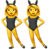
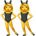
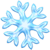
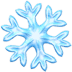
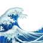
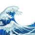

thank you for being my other half @ nubble light house , york , me G: P: 0.499,  0.129, 0.091, 0.088, 0.051, 0.032, 0.023,
0.129, 0.091, 0.088, 0.051, 0.032, 0.023,  0.014, 0.011, 0.01,
0.014, 0.011, 0.01,  0.009,
0.009,  0.006, 0.005,
0.006, 0.005,  0.004,
0.004,  0.004
0.004
thank you naacp ! ! ! ! #tistheseason @ empire state building G: P:  0.538,
0.538,  0.12, 0.088, 0.051, 0.043, 0.034,
0.12, 0.088, 0.051, 0.043, 0.034,  0.018, 0.018, 0.018,
0.018, 0.018, 0.018,  0.016,
0.016,  0.011,
0.011,  0.007, 0.007, 0.006, 0.006
0.007, 0.007, 0.006, 0.006
ninachanelabney etswehbygallery @user @ untitled . art fair G: P:  0.198, 0.122, 0.114,
0.198, 0.122, 0.114,  0.08,
0.08,  0.046,
0.046,  0.039, 0.032, 0.026,
0.039, 0.032, 0.026,  0.026, 0.022, 0.022,
0.026, 0.022, 0.022,  0.02,
0.02,  0.019,
0.019,  0.014, 0.013
0.014, 0.013
tonight was one for the books #getrevdfoxboro #launchparty #revdfam @user @ gillette stadium G:  P:
P:  0.614,
0.614,  0.234, 0.045,
0.234, 0.045,  0.026, 0.026, 0.015,
0.026, 0.026, 0.015,  0.011, 0.004, 0.004,
0.011, 0.004, 0.004,  0.004, 0.003, 0.003, 0.002, 0.002, 0.001
0.004, 0.003, 0.003, 0.002, 0.002, 0.001
the best kind of girls are earls girls @ earls dadeland G:  P:  0.435,
P:  0.435,  0.141,
0.141,  0.1,
0.1,  0.045, 0.036,
0.045, 0.036,  0.031,
0.031,  0.027,
0.027,  0.027, 0.024,
0.027, 0.024,  0.02, 0.019, 0.016, 0.011,
0.02, 0.019, 0.016, 0.011,  0.01, 0.008
0.01, 0.008
#huskers @ memorial stadium G:  P:
P:  0.904,
0.904,  0.022,
0.022,  0.019, 0.011,
0.019, 0.011,  0.007, 0.006,
0.007, 0.006,  0.005, 0.003, 0.003, 0.002, 0.002, 0.002, 0.002, 0.002,
0.005, 0.003, 0.003, 0.002, 0.002, 0.002, 0.002, 0.002,  0.001
0.001
she's american @ washington monument national monument G: P: 0.978,  0.003,
0.003,  0.003,
0.003,  0.002, 0.002,
0.002, 0.002,  0.001, 0.001, 0.001, 0.001,
0.001, 0.001, 0.001, 0.001,  0.001, 0.001, 0.001,
0.001, 0.001, 0.001,  0.001,
0.001,  0.001, 0.0
0.001, 0.0
ran into some raptors #poeltl #nogueira @ cora's breakfast & amp ; lunch G: P:  0.602,
0.602,  0.126, 0.092, 0.041, 0.03,
0.126, 0.092, 0.041, 0.03,  0.014,
0.014,  0.013,
0.013,  0.012, 0.011, 0.01,
0.012, 0.011, 0.01,  0.009,
0.009,  0.005, 0.004,
0.005, 0.004,  0.004, 0.004
0.004, 0.004
christmas vacation @ easton town center G: P: 0.656,  0.06,  0.046,
0.06,  0.046,  0.023,
0.023,  0.019, 0.014,
0.019, 0.014,  0.014,
0.014,  0.012,
0.012,  0.008, 0.008, 0.008,
0.008, 0.008, 0.008,  0.008, 0.007, 0.007,
0.008, 0.007, 0.007,  0.007
0.007
nope and you're not changing that G:  P: 0.385, 0.094, 0.06,
P: 0.385, 0.094, 0.06,  0.051, 0.049,
0.051, 0.049,  0.037,
0.037,  0.036, 0.03,
0.036, 0.03,  0.028, 0.025, 0.025,
0.028, 0.025, 0.025,  0.019, 0.017,
0.019, 0.017,  0.014, 0.013
0.014, 0.013
faith . family . football . cardinals . #azcardinals #cardinals #nyjets #jets #nfl #football G:  P:
P:  0.996,
0.996,  0.001,
0.001,  0.0,
0.0,  0.0,
0.0,  0.0, 0.0, 0.0, 0.0,
0.0, 0.0, 0.0, 0.0,  0.0, 0.0,
0.0, 0.0,  0.0, 0.0, 0.0, 0.0,
0.0, 0.0, 0.0, 0.0,  0.0
0.0
im happy cause he's happy @ gamekeepers G:  P:
P:  0.293,
0.293,  0.169,
0.169,  0.098,
0.098,  0.075,
0.075,  0.056,
0.056,  0.029, 0.028, 0.026,
0.029, 0.028, 0.026,  0.025,
0.025,  0.019, 0.018, 0.016,
0.019, 0.018, 0.016,  0.015, 0.01,
0.015, 0.01,  0.009
0.009
happy bday nayla #familydinner #sept2016 #goodtimes @ pappadeaux G: P:  0.298, 0.24,
0.298, 0.24,  0.141,
0.141,  0.066,
0.066,  0.06,
0.06,  0.027,
0.027,  0.024,
0.024,  0.021, 0.021, 0.015, 0.013,
0.021, 0.021, 0.015, 0.013,  0.013,
0.013,  0.008, 0.008, 0.005
0.008, 0.008, 0.005
#awkwardtree @ seattle , washington G: P:  0.193, 0.062, 0.059,
0.193, 0.062, 0.059,  0.046, 0.045, 0.04, 0.034, 0.032, 0.027,
0.046, 0.045, 0.04, 0.034, 0.032, 0.027,  0.027, 0.025, 0.022,
0.027, 0.025, 0.022,  0.022, 0.02, 0.018
0.022, 0.02, 0.018
htown girl fo lyfe . #houstontx #home @ houston , texas G: P: 0.335,  0.299, 0.107,
0.299, 0.107,  0.061,
0.061,  0.027,
0.027,  0.024, 0.018, 0.018, 0.015, 0.008,
0.024, 0.018, 0.018, 0.015, 0.008,  0.008,
0.008,  0.008,
0.008,  0.007, 0.007, 0.006
0.007, 0.007, 0.006
matilda doing a little bartending tonight ! ! she makes a good drink ! #hattiesclt #plazamidwood G:  P:
P:  0.351,
0.351,  0.169,
0.169,  0.122,
0.122,  0.076,
0.076,  0.072,
0.072,  0.062,
0.062,  0.04,
0.04,  0.025,
0.025,  0.016, 0.014, 0.009, 0.008,
0.016, 0.014, 0.009, 0.008,  0.007, 0.004, 0.004
0.007, 0.004, 0.004
ive really grown to love fort collins so much @ downtown fort collins G: P:  0.693, 0.066,
0.693, 0.066,  0.046, 0.027, 0.019, 0.018, 0.011, 0.01, 0.009,
0.046, 0.027, 0.019, 0.018, 0.011, 0.01, 0.009,  0.009, 0.009, 0.008, 0.007,
0.009, 0.009, 0.008, 0.007,  0.006,
0.006,  0.006
0.006
love you dad , happy birthday #79yearsstrong @ mississauga , ontario G: P:  0.39, 0.139, 0.123, 0.058, 0.038, 0.034,
0.39, 0.139, 0.123, 0.058, 0.038, 0.034,  0.034,
0.034,  0.019, 0.019, 0.016,
0.019, 0.019, 0.016,  0.016,
0.016,  0.015,
0.015,  0.013, 0.012, 0.009
0.013, 0.012, 0.009
sweet sunflower - its ya birth day / / this picture describes our friendship perfectly . we spend a G: P: 0.12,  0.109, 0.093,
0.109, 0.093,  0.075,
0.075,  0.072, 0.066, 0.039,
0.072, 0.066, 0.039,  0.036, 0.032,
0.036, 0.032,  0.031, 0.03,
0.031, 0.03,  0.028,
0.028,  0.025, 0.025,
0.025, 0.025,  0.025
0.025
leatherbutt takes on a town called maggie valley @ maggie valley , G:  P: 0.186,
P: 0.186,  0.144,
0.144,  0.125, 0.096,
0.125, 0.096,  0.08, 0.038,
0.08, 0.038,  0.033, 0.033,
0.033, 0.033,  0.032,
0.032,  0.03,
0.03,  0.024, 0.021, 0.02, 0.02, 0.018
0.024, 0.021, 0.02, 0.02, 0.018
i just don't feel like walking on heels anymore . @ mgm grand las vegas G:  P: 0.155, 0.144, 0.063,
P: 0.155, 0.144, 0.063,  0.06,
0.06,  0.054,
0.054,  0.053, 0.045, 0.042,
0.053, 0.045, 0.042,  0.035,
0.035,  0.026, 0.02,
0.026, 0.02,  0.02,
0.02,  0.02, 0.019,
0.02, 0.019,  0.017
0.017
lit : @user @ butler university ( official page ) G: P: 0.467, 0.262, 0.187, 0.013, 0.012, 0.005, 0.005, 0.004, 0.004, 0.003, 0.003,  0.003,
0.003,  0.003, 0.002, 0.002
0.003, 0.002, 0.002
thankful for everyone in my life & amp ; the fact i had a little motivation to get my butt to the gym G: P:  0.226, 0.184,
0.226, 0.184,  0.09, 0.073, 0.065, 0.053, 0.043, 0.029,
0.09, 0.073, 0.065, 0.053, 0.043, 0.029,  0.028, 0.028,
0.028, 0.028,  0.021, 0.02,
0.021, 0.02,  0.017,
0.017,  0.017, 0.013
0.017, 0.013
playoff time ! go raiders ! ! ! ! ! ( @ zane trace local schools in kingston , oh ) G:  P:
P:  0.635, 0.154,
0.635, 0.154,  0.121, 0.014, 0.012, 0.012, 0.011, 0.005, 0.004, 0.003,
0.121, 0.014, 0.012, 0.012, 0.011, 0.005, 0.004, 0.003,  0.003,
0.003,  0.003,
0.003,  0.003,
0.003,  0.002,
0.002,  0.002
0.002
being silly with #bestie @ boston , ma , united states G:  P: 0.233,
P: 0.233,  0.169,
0.169,  0.09, 0.088,
0.09, 0.088,  0.049, 0.042,
0.049, 0.042,  0.039,
0.039,  0.033,
0.033,  0.029, 0.025,
0.029, 0.025,  0.024, 0.023,
0.024, 0.023,  0.023,
0.023,  0.016, 0.014
0.016, 0.014
great day shopping and dining with my best friend on our day off G:  P:
P:  0.334, 0.1,
0.334, 0.1,  0.081, 0.043, 0.038,
0.081, 0.043, 0.038,  0.036,
0.036,  0.03, 0.029, 0.029,
0.03, 0.029, 0.029,  0.026, 0.021, 0.02,
0.026, 0.021, 0.02,  0.018,
0.018,  0.018, 0.018
0.018, 0.018
hi from my cousin & amp ; me @ planet rose G: P:  0.155,
0.155,  0.101,
0.101,  0.076, 0.066, 0.056,
0.076, 0.066, 0.056,  0.043, 0.037, 0.035, 0.033,
0.043, 0.037, 0.035, 0.033,  0.032,
0.032,  0.029,
0.029,  0.029, 0.027,
0.029, 0.027,  0.025, 0.023
0.025, 0.023
boston ~ we had a goood time . #vibestrong #dukedumont #clapyourhands #blaseboysclub #synths #piano G:  P: 0.85,
P: 0.85,  0.047,
0.047,  0.027,
0.027,  0.012, 0.012, 0.007,
0.012, 0.012, 0.007,  0.007, 0.005,
0.007, 0.005,  0.004,
0.004,  0.003, 0.003, 0.003, 0.003, 0.002, 0.002
0.003, 0.003, 0.003, 0.003, 0.002, 0.002
" virgil got me feeling like a million dollar man " - @user @ malibu , california G: P: 0.79, 0.161,  0.016, 0.01, 0.004,
0.016, 0.01, 0.004,  0.003,
0.003,  0.003, 0.003, 0.002,  0.001, 0.001,
0.003, 0.003, 0.002,  0.001, 0.001,  0.001,
0.001,  0.001, 0.001,
0.001, 0.001,  0.001
0.001
hungry @ goldey-beacom college G: P:  0.211,
0.211,  0.075, 0.075,
0.075, 0.075,  0.053,
0.053,  0.052, 0.04, 0.04,
0.052, 0.04, 0.04,  0.036,
0.036,  0.034, 0.021, 0.019,
0.034, 0.021, 0.019,  0.018, 0.018, 0.018,
0.018, 0.018, 0.018,  0.018
0.018
a friendship is built over time , but sisterhood is given automatically ; G: P:  0.47, 0.122, 0.044,
0.47, 0.122, 0.044,  0.037, 0.035, 0.029, 0.025, 0.024, 0.021, 0.02, 0.019, 0.018,
0.037, 0.035, 0.029, 0.025, 0.024, 0.021, 0.02, 0.019, 0.018,  0.017, 0.014,
0.017, 0.014,  0.012
0.012
closeup so you can see alice's tattoos - this wall was worked on by several artists , including G: P:  0.646, 0.089, 0.068,
0.646, 0.089, 0.068,  0.049,
0.049,  0.047, 0.024,
0.047, 0.024,  0.016, 0.011, 0.009,
0.016, 0.011, 0.009,  0.008,
0.008,  0.006, 0.004, 0.003,
0.006, 0.004, 0.003,  0.003,
0.003,  0.002
0.002
day dreaming of yosemite . #travel #liveauthentic #vscocam #adventure #winter #yosemite G: P: 0.157,  0.123,
0.123,  0.099,
0.099,  0.096,
0.096,  0.088,
0.088,  0.066,
0.066,  0.062, 0.041, 0.032,
0.062, 0.041, 0.032,  0.026, 0.023, 0.02,
0.026, 0.023, 0.02,  0.019, 0.019,
0.019, 0.019,  0.019
0.019
@user good night . G:  P:
P:  0.216,
0.216,  0.13,
0.13,  0.111, 0.061,
0.111, 0.061,  0.044,
0.044,  0.041,
0.041,  0.035,
0.035,  0.032, 0.032, 0.03, 0.028, 0.026,
0.032, 0.032, 0.03, 0.028, 0.026,  0.02, 0.017, 0.017
0.02, 0.017, 0.017
amilyadventures #daisyhope eingdaisysmomma @ milwaukee G: P:  0.188, 0.104, 0.081,
0.188, 0.104, 0.081,  0.049, 0.046,
0.049, 0.046,  0.042, 0.035, 0.026, 0.025, 0.025, 0.023,
0.042, 0.035, 0.026, 0.025, 0.025, 0.023,  0.022, 0.019,
0.022, 0.019,  0.017,
0.017,  0.016
0.016
almost got run over for the shot . #nyc @ new york , new york G: P: 0.11,  0.07, 0.065, 0.057,
0.07, 0.065, 0.057,  0.054, 0.043,
0.054, 0.043,  0.043,
0.043,  0.038,
0.038,  0.038, 0.038,
0.038, 0.038,  0.034,
0.034,  0.033, 0.032,
0.033, 0.032,  0.03, 0.027
0.03, 0.027
thankful to come to work at a place with such cute ( and photogenic ) creatures #guiracuckoo G: P: 0.259,  0.115, 0.073,
0.115, 0.073,  0.072, 0.071, 0.06, 0.059,
0.072, 0.071, 0.06, 0.059,  0.053, 0.043, 0.04, 0.028,
0.053, 0.043, 0.04, 0.028,  0.027,
0.027,  0.021,
0.021,  0.013,
0.013,  0.009
0.009
#repost @user with repostapp sunday night = gym are you willing to give up the person G:  P:
P:  0.406, 0.102,
0.406, 0.102,  0.083, 0.073,
0.083, 0.073,  0.054, 0.025, 0.02,
0.054, 0.025, 0.02,  0.019, 0.019, 0.018,
0.019, 0.019, 0.018,  0.018,
0.018,  0.012, 0.01,
0.012, 0.01,  0.01,
0.01,  0.009
0.009
another thing to check off my bucket list @ port lucaya , G: P: 0.832, 0.027, 0.017, 0.015,  0.015, 0.014,
0.015, 0.014,  0.013,
0.013,  0.011, 0.01,
0.011, 0.01,  0.009,
0.009,  0.008, 0.007,
0.008, 0.007,  0.007, 0.003,
0.007, 0.003,  0.002
0.002
working for a night #chicago @ rogers park provisions G: P: 0.125,  0.092, 0.083,
0.092, 0.083,  0.071,
0.071,  0.069, 0.065,
0.069, 0.065,  0.039,
0.039,  0.036,
0.036,  0.029, 0.024,
0.029, 0.024,  0.023, 0.023,
0.023, 0.023,  0.021, 0.021,
0.021, 0.021,  0.02
0.02
blavying never looked so good @ lincoln center G: P:  0.205,
0.205,  0.073,
0.073,  0.061, 0.052,
0.061, 0.052,  0.035, 0.033, 0.028,
0.035, 0.033, 0.028,  0.028, 0.028,
0.028, 0.028,  0.025, 0.023,
0.025, 0.023,  0.023,
0.023,  0.023, 0.022,
0.023, 0.022,  0.021
0.021
race day ! good luck to these two yahoos #gmas16 @ grandma's G:  P:
P:  0.191,
0.191,  0.142, 0.058,
0.142, 0.058,  0.055,
0.055,  0.052, 0.046,
0.052, 0.046,  0.044,
0.044,  0.039, 0.037, 0.034,
0.039, 0.037, 0.034,  0.031, 0.023, 0.019,
0.031, 0.023, 0.019,  0.014, 0.014
0.014, 0.014
@user @user @user i'm a doorman in and tell your forecast to my residents . they will miss you and so will i maria . G:  P:
P:  0.414, 0.143,
0.414, 0.143,  0.084, 0.062,
0.084, 0.062,  0.049, 0.045, 0.044, 0.031, 0.018,
0.049, 0.045, 0.044, 0.031, 0.018,  0.016,
0.016,  0.011,
0.011,  0.01, 0.009,
0.01, 0.009,  0.008, 0.005
0.008, 0.005
making the most of my two weeks left in this beautiful state @ G: P:  0.261,
0.261,  0.229,
0.229,  0.129,
0.129,  0.076, 0.043, 0.032, 0.029, 0.026, 0.024,
0.076, 0.043, 0.032, 0.029, 0.026, 0.024,  0.02,
0.02,  0.01, 0.01,
0.01, 0.01,  0.01, 0.009, 0.009
0.01, 0.009, 0.009
i love a bulldog thanks for this great photo @user #bulldogcountry #buenavista G:  P:
P:  0.398,
0.398,  0.156, 0.064,
0.156, 0.064,  0.053, 0.047, 0.041, 0.04,
0.053, 0.047, 0.041, 0.04,  0.031,
0.031,  0.027, 0.022, 0.02,
0.027, 0.022, 0.02,  0.013, 0.012,
0.013, 0.012,  0.01, 0.008
0.01, 0.008
hands down , the most viewed recipe on our blog . . . this gem ! our cocoa almond smoothie we G:  P: 0.279,
P: 0.279,  0.229,
0.229,  0.073, 0.054,
0.073, 0.054,  0.045,
0.045,  0.043, 0.039, 0.023,
0.043, 0.039, 0.023,  0.021, 0.02,
0.021, 0.02,  0.019, 0.018,
0.019, 0.018,  0.017,
0.017,  0.014,
0.014,  0.012
0.012
because my spring break starts today @ conway , arkansas G: P:  0.132,
0.132,  0.117,
0.117,  0.084,
0.084,  0.071,
0.071,  0.051,
0.051,  0.043, 0.043,
0.043, 0.043,  0.03, 0.027, 0.025,
0.03, 0.027, 0.025,  0.024, 0.024, 0.023, 0.022, 0.021
0.024, 0.024, 0.023, 0.022, 0.021
how do you spend your saturday nights ? #defeo #passion #goals #drive #inspiration G:  P:
P:  0.286,
0.286,  0.176,
0.176,  0.082,
0.082,  0.065, 0.042,
0.065, 0.042,  0.031, 0.027, 0.027, 0.025,
0.031, 0.027, 0.027, 0.025,  0.023, 0.022,
0.023, 0.022,  0.021,
0.021,  0.016,
0.016,  0.011, 0.01
0.011, 0.01
christmas in florida ! #tistheseason #merrychristmas #happyholidays istmasinflorida @ beach G: P: 0.93,  0.031,
0.031,  0.016,
0.016,  0.002, 0.002, 0.002,
0.002, 0.002, 0.002,  0.001, 0.001,
0.001, 0.001,  0.001,
0.001,  0.001, 0.001,
0.001, 0.001,  0.001, 0.001,
0.001, 0.001,  0.001,
0.001,  0.001
0.001
the boys are back @ tau kappa epsilon fraternity G: P: 0.252, 0.249, 0.088,  0.044,
0.044,  0.042, 0.035, 0.031,
0.042, 0.035, 0.031,  0.027, 0.024, 0.017, 0.017,
0.027, 0.024, 0.017, 0.017,  0.017, 0.017,
0.017, 0.017,  0.014, 0.014
0.014, 0.014
what nigga ? ! i'm hungry . . . #fatboyproblems @ the cheesecake factory cerritos G:  P: 0.487,
P: 0.487,  0.123,
0.123,  0.064, 0.049, 0.048,
0.064, 0.049, 0.048,  0.044,
0.044,  0.036, 0.025,
0.036, 0.025,  0.017, 0.013,
0.017, 0.013,  0.01, 0.009, 0.007,
0.01, 0.009, 0.007,  0.007,
0.007,  0.006
0.006
i'm loving this healthy cooking life #love #cooking #healthy #healthycooking #zuchinni G: P:  0.244,
0.244,  0.158, 0.111,
0.158, 0.111,  0.053,
0.053,  0.046,
0.046,  0.041, 0.038,
0.041, 0.038,  0.031,
0.031,  0.03,
0.03,  0.024, 0.024, 0.021,
0.024, 0.024, 0.021,  0.02, 0.017,
0.02, 0.017,  0.016
0.016
this @user classic long #trench is a beauty and it's now 50 % off . use code mystery 50 . G: P:  0.38, 0.189,
0.38, 0.189,  0.114,
0.114,  0.054,
0.054,  0.039, 0.02, 0.017, 0.016, 0.016,
0.039, 0.02, 0.017, 0.016, 0.016,  0.013, 0.013,
0.013, 0.013,  0.011, 0.011, 0.01, 0.01
0.011, 0.011, 0.01, 0.01
love my hubby @ the chophouse G:  P:
P:  0.553,
0.553,  0.097,
0.097,  0.092, 0.077, 0.043, 0.034, 0.028,
0.092, 0.077, 0.043, 0.034, 0.028,  0.02,
0.02,  0.009,
0.009,  0.008, 0.007, 0.006, 0.004, 0.004,
0.008, 0.007, 0.006, 0.004, 0.004,  0.003
0.003
sept 14,1993 my ass was born straight outta this girl vjj ! ! yall think im cool wait till you G: P: 0.298, 0.132, 0.08, 0.066,  0.037, 0.034,
0.037, 0.034,  0.031, 0.027, 0.027, 0.026,
0.031, 0.027, 0.027, 0.026,  0.023,
0.023,  0.023, 0.019,
0.023, 0.019,  0.017,
0.017,  0.016
0.016
dat boy #kane . ' ol crazy azz #rednose . #rednosepitbull #13weeks #babyboy #puppiesofinstagram G: P:  0.745, 0.134,
0.745, 0.134,  0.02, 0.014,
0.02, 0.014,  0.012, 0.011,
0.012, 0.011,  0.009, 0.009, 0.008, 0.005, 0.005,
0.009, 0.009, 0.008, 0.005, 0.005,  0.004,
0.004,  0.004, 0.004, 0.003
0.004, 0.004, 0.003
winter evenings w / baby boo #happyholidays #oliveu @ seattle , washington G:  P: 0.849,
P: 0.849,  0.037,
0.037,  0.028, 0.017,
0.028, 0.017,  0.016, 0.007, 0.006, 0.006,
0.016, 0.007, 0.006, 0.006,  0.006, 0.004,
0.006, 0.004,  0.003,
0.003,  0.003, 0.002, 0.002, 0.001
0.003, 0.002, 0.002, 0.001
sometimes i just can't help but pull over and take a picture of a beautiful scenery . @ fred G:  P:
P:  0.187,
0.187,  0.175,
0.175,  0.099,
0.099,  0.086,
0.086,  0.047, 0.032,
0.047, 0.032,  0.03, 0.029,
0.03, 0.029,  0.029, 0.028, 0.027,
0.029, 0.028, 0.027,  0.022, 0.021, 0.017,
0.022, 0.021, 0.017,  0.017
0.017
the amazing jose villa @ solvang , california G:  P:
P:  0.38,
0.38,  0.191, 0.097, 0.085, 0.06, 0.023,
0.191, 0.097, 0.085, 0.06, 0.023,  0.023, 0.016, 0.015,
0.023, 0.016, 0.015,  0.012, 0.01, 0.009,
0.012, 0.01, 0.009,  0.007, 0.007,
0.007, 0.007,  0.006
0.006
it's a #minecraft #halloween @ baltimore , maryland G:  P:
P:  0.82, 0.039, 0.03,
0.82, 0.039, 0.03,  0.013, 0.008,
0.013, 0.008,  0.008, 0.007, 0.006, 0.006, 0.006,
0.008, 0.007, 0.006, 0.006, 0.006,  0.005,
0.005,  0.004,
0.004,  0.004, 0.004,
0.004, 0.004,  0.003
0.003
time for thai ! #thaifood #sfdining #food #sausage #mint #peanuts #alist #sf @ tycoon thai G: P:  0.4,
0.4,  0.2,
0.2,  0.17, 0.036,
0.17, 0.036,  0.033,
0.033,  0.03, 0.026,
0.03, 0.026,  0.019,
0.019,  0.018, 0.01, 0.01, 0.009,
0.018, 0.01, 0.01, 0.009,  0.008,
0.008,  0.007,
0.007,  0.005
0.005
my strawberry cupcake @ ocean club golf course paradise island G:  P:
P:  0.299,
0.299,  0.14,
0.14,  0.106,
0.106,  0.064, 0.057, 0.052, 0.042, 0.028,
0.064, 0.057, 0.052, 0.042, 0.028,  0.025, 0.023, 0.023,
0.025, 0.023, 0.023,  0.019,
0.019,  0.013,
0.013,  0.013,
0.013,  0.012
0.012
picture from our sold out ep release show ! @user G: P: 0.389, 0.289, 0.131,  0.027,
0.027,  0.014, 0.014, 0.013, 0.013,
0.014, 0.014, 0.013, 0.013,  0.008, 0.008,
0.008, 0.008,  0.008,
0.008,  0.006,
0.006,  0.006,
0.006,  0.006,
0.006,  0.006
0.006
missed you @ jefferson's wings * burgers * oysters G: P: 0.51, 0.253, 0.14, 0.027,  0.025, 0.016,
0.025, 0.016,  0.014, 0.004,
0.014, 0.004,  0.003, 0.002, 0.001,
0.003, 0.002, 0.001,  0.001,
0.001,  0.001,
0.001,  0.001, 0.0
0.001, 0.0
esha love the kids ! ! ! #beasleyacademy ! today at my #itsok2beeu G:  P:
P:  0.283,
0.283,  0.16, 0.096, 0.072, 0.031, 0.029, 0.029,
0.16, 0.096, 0.072, 0.031, 0.029, 0.029,  0.029,
0.029,  0.027, 0.024,
0.027, 0.024,  0.017, 0.016, 0.015,
0.017, 0.016, 0.015,  0.014,
0.014,  0.012
0.012
dont plan on working a 9 - 5 . photocred : @user @ the vault G:  P: 0.574, 0.246, 0.029,
P: 0.574, 0.246, 0.029,  0.023, 0.013,
0.023, 0.013,  0.012,
0.012,  0.009, 0.008, 0.007, 0.007, 0.007,
0.009, 0.008, 0.007, 0.007, 0.007,  0.006,
0.006,  0.006, 0.006, 0.006
0.006, 0.006, 0.006
spring term is going to kick my ass but at least i don't have any classes before 10 : 30 G:  P: 0.229, 0.146, 0.132,
P: 0.229, 0.146, 0.132,  0.088,
0.088,  0.047,
0.047,  0.038, 0.027,
0.038, 0.027,  0.025, 0.025,
0.025, 0.025,  0.023, 0.02, 0.02,
0.023, 0.02, 0.02,  0.018, 0.017,
0.018, 0.017,  0.016
0.016
namaste . enjoying my peaceful sunday with some painting & amp ; G:  P:
P:  0.468,
0.468,  0.132,
0.132,  0.126,
0.126,  0.107, 0.019,
0.107, 0.019,  0.018,
0.018,  0.017,
0.017,  0.016,
0.016,  0.014, 0.014, 0.01, 0.008, 0.007, 0.006, 0.005
0.014, 0.014, 0.01, 0.008, 0.007, 0.006, 0.005
i carry all this crap to my retail car , across the street and up to level 2 and get a text G:  P: 0.41, 0.108, 0.057,
P: 0.41, 0.108, 0.057,  0.053,
0.053,  0.045,
0.045,  0.045,
0.045,  0.033, 0.027, 0.024, 0.023,
0.033, 0.027, 0.024, 0.023,  0.021,
0.021,  0.015, 0.009, 0.009,
0.015, 0.009, 0.009,  0.008
0.008
special thanks for the @user team for staying open a extra 20 G:  P:
P:  0.282, 0.077,
0.282, 0.077,  0.065,
0.065,  0.054, 0.051,
0.054, 0.051,  0.044, 0.042,
0.044, 0.042,  0.041,
0.041,  0.038,
0.038,  0.035,
0.035,  0.026, 0.025, 0.02,
0.026, 0.025, 0.02,  0.018, 0.018
0.018, 0.018
double a takes canalside @ canalside buffalo G: P: 0.349,  0.129, 0.091, 0.083,
0.129, 0.091, 0.083,  0.069, 0.05,
0.069, 0.05,  0.048,
0.048,  0.032, 0.019,
0.032, 0.019,  0.015, 0.014,
0.015, 0.014,  0.012,
0.012,  0.009,
0.009,  0.009, 0.008
0.009, 0.008
from quick weave to silk press . but i'm so proud of @user hair and the growth she's G:  P:
P:  0.281,
0.281,  0.223, 0.141,
0.223, 0.141,  0.073,
0.073,  0.072, 0.04,
0.072, 0.04,  0.027, 0.026, 0.014, 0.012, 0.011,
0.027, 0.026, 0.014, 0.012, 0.011,  0.009, 0.005, 0.005, 0.005
0.009, 0.005, 0.005, 0.005
you know what day it is . . . wednesday ! make it your wednesday tradition to come out to G: P:  0.197,
0.197,  0.077, 0.076,
0.077, 0.076,  0.072,
0.072,  0.057, 0.05, 0.046,
0.057, 0.05, 0.046,  0.04, 0.039,
0.04, 0.039,  0.032, 0.028,
0.032, 0.028,  0.028, 0.027, 0.025, 0.025
0.028, 0.027, 0.025, 0.025
this is what getting " lit " at a sweet 16 looks like @ ohm nightclub G: P: 0.412, 0.267,  0.089, 0.03,
0.089, 0.03,  0.019,
0.019,  0.017,
0.017,  0.014, 0.012, 0.011, 0.01,
0.014, 0.012, 0.011, 0.01,  0.01,
0.01,  0.01,
0.01,  0.009,
0.009,  0.009, 0.009
0.009, 0.009
in honor of my senior thesis being done @ summer house santa monica - north bethesda G: P: 0.187,  0.105,
0.105,  0.1,
0.1,  0.057,
0.057,  0.044, 0.043, 0.038,
0.044, 0.043, 0.038,  0.036,
0.036,  0.027,
0.027,  0.025, 0.025, 0.025, 0.024,
0.025, 0.025, 0.025, 0.024,  0.023, 0.016
0.023, 0.016
lovin ' the last bit of summer days @ whitelake on the lake G:  P:
P:  0.559,
0.559,  0.372, 0.011, 0.006,
0.372, 0.011, 0.006,  0.005, 0.004, 0.004, 0.003, 0.003, 0.003, 0.003, 0.002, 0.002, 0.002, 0.002
0.005, 0.004, 0.004, 0.003, 0.003, 0.003, 0.003, 0.002, 0.002, 0.002, 0.002
thanks for 400 here guys i'm gonna film a video now @ fairplay , colorado G:  P: 0.077,
P: 0.077,  0.075, 0.073,
0.075, 0.073,  0.073,
0.073,  0.072,
0.072,  0.062, 0.053, 0.051, 0.042, 0.04, 0.036,
0.062, 0.053, 0.051, 0.042, 0.04, 0.036,  0.032,
0.032,  0.031,
0.031,  0.027, 0.025
0.027, 0.025
cubbiesi love these guys . big man crushes all around . i mean i've seen seen a lot of G:  P:
P:  0.301, 0.269,
0.301, 0.269,  0.108,
0.108,  0.089, 0.037, 0.025, 0.024, 0.02, 0.012,
0.089, 0.037, 0.025, 0.024, 0.02, 0.012,  0.01, 0.009, 0.009,
0.01, 0.009, 0.009,  0.009, 0.008, 0.007
0.009, 0.008, 0.007
happy birthday to my little princess G: P:  0.238,
0.238,  0.212, 0.207,
0.212, 0.207,  0.055,
0.055,  0.039, 0.036, 0.034, 0.03, 0.027,
0.039, 0.036, 0.034, 0.03, 0.027,  0.026, 0.025,
0.026, 0.025,  0.011, 0.01, 0.008, 0.005
0.011, 0.01, 0.008, 0.005
good night mi amores ! #tahoe #white #sleep @ the ritz-carlton club , lake tahoe G:  P:
P:  0.359,
0.359,  0.209,
0.209,  0.165, 0.087,
0.165, 0.087,  0.061, 0.025, 0.023, 0.018, 0.013, 0.006,
0.061, 0.025, 0.023, 0.018, 0.013, 0.006,  0.006,
0.006,  0.003,
0.003,  0.002,
0.002,  0.002, 0.002
0.002, 0.002
come by our pink lemonade stand today between 11 am - 2 pm . we will G: P: 0.193,  0.11, 0.11,
0.11, 0.11,  0.086,
0.086,  0.086, 0.044,
0.086, 0.044,  0.029, 0.026, 0.025, 0.025, 0.024,
0.029, 0.026, 0.025, 0.025, 0.024,  0.024,
0.024,  0.024,
0.024,  0.023, 0.022
0.023, 0.022
@user that bitch mad this man pay for her whole doctorate degree G: P: 0.475, 0.095,  0.065,
0.065,  0.054,
0.054,  0.048,
0.048,  0.03, 0.024,
0.03, 0.024,  0.017, 0.016,
0.017, 0.016,  0.016,
0.016,  0.016, 0.015,
0.016, 0.015,  0.013, 0.013, 0.011
0.013, 0.013, 0.011
#twitch tchholidayparty @ the san francisco mint G: P: 0.198,  0.155, 0.145, 0.105, 0.075,
0.155, 0.145, 0.105, 0.075,  0.059,
0.059,  0.045,
0.045,  0.033, 0.028, 0.023,
0.033, 0.028, 0.023,  0.017, 0.015,
0.017, 0.015,  0.011, 0.008, 0.007
0.011, 0.008, 0.007
to the weekend #typography #graphic #minimal #graphicdesign #saturday #theweekend #hi @ great G: P: 0.438,  0.24,
0.24,  0.096, 0.067, 0.042, 0.038,
0.096, 0.067, 0.042, 0.038,  0.019,
0.019,  0.009, 0.008, 0.007, 0.006,
0.009, 0.008, 0.007, 0.006,  0.005, 0.004, 0.003, 0.002
0.005, 0.004, 0.003, 0.002
@ salmon falls west historic district G: P:  0.131,
0.131,  0.112,
0.112,  0.071, 0.068,
0.071, 0.068,  0.056, 0.039,
0.056, 0.039,  0.038, 0.032, 0.031,
0.038, 0.032, 0.031,  0.028,
0.028,  0.026,
0.026,  0.024, 0.021, 0.019, 0.019
0.024, 0.021, 0.019, 0.019
18 on my driver's license , 8 at heart #trickortreat @ kings G:  P: 0.344,
P: 0.344,  0.105,
0.105,  0.087,
0.087,  0.081, 0.05,
0.081, 0.05,  0.044, 0.038,
0.044, 0.038,  0.037,
0.037,  0.035, 0.03,
0.035, 0.03,  0.022, 0.018,
0.022, 0.018,  0.015, 0.015, 0.015
0.015, 0.015, 0.015
company christmas party with my beautiful wife ! merry christmas ! @ G: P: 0.524,  0.359,
0.359,  0.022,
0.022,  0.017, 0.011,
0.017, 0.011,  0.008,
0.008,  0.008, 0.007,
0.008, 0.007,  0.006, 0.006, 0.005, 0.004, 0.004,
0.006, 0.006, 0.005, 0.004, 0.004,  0.004, 0.004
0.004, 0.004
don't see enough of this chick . . . . . . . . . . . . #girls #philly #party #girly #girl #friends #squad G: P: 0.399, 0.211, 0.067,  0.046,
0.046,  0.043,
0.043,  0.043,
0.043,  0.036, 0.018,
0.036, 0.018,  0.017,
0.017,  0.017, 0.015,
0.017, 0.015,  0.013, 0.011,
0.013, 0.011,  0.009,
0.009,  0.009
0.009
sat brett's family section , nbd @ chaifetz arena G: P: 0.347,  0.144,
0.144,  0.082,
0.082,  0.054, 0.042, 0.032,
0.054, 0.042, 0.032,  0.029, 0.028, 0.027,
0.029, 0.028, 0.027,  0.024, 0.024, 0.022, 0.022, 0.021, 0.014
0.024, 0.024, 0.022, 0.022, 0.021, 0.014
same receivers , different textures . ( mines purdier ) mingtonmodel870 @ athens , tennessee G:  P:
P:  0.286,
0.286,  0.097, 0.096,
0.097, 0.096,  0.089, 0.056,
0.089, 0.056,  0.045,
0.045,  0.04, 0.038, 0.037,
0.04, 0.038, 0.037,  0.035, 0.031, 0.03, 0.015, 0.011,
0.035, 0.031, 0.03, 0.015, 0.011,  0.009
0.009
peace out vegas #crushedit @ las vegas mccarran airport G:  P:
P:  0.794,
0.794,  0.074, 0.028,
0.074, 0.028,  0.019, 0.014, 0.009, 0.009, 0.008, 0.008,
0.019, 0.014, 0.009, 0.009, 0.008, 0.008,  0.007,
0.007,  0.006,
0.006,  0.005, 0.003,
0.005, 0.003,  0.003,
0.003,  0.002
0.002
@user yes bessy ! work work lang ako lagi dito . love you miss youuu ! ! G:  P: 0.977, 0.012,
P: 0.977, 0.012,  0.003,
0.003,  0.002,
0.002,  0.001, 0.001,
0.001, 0.001,  0.001,
0.001,  0.0,
0.0,  0.0, 0.0, 0.0,
0.0, 0.0, 0.0,  0.0, 0.0, 0.0, 0.0
0.0, 0.0, 0.0, 0.0
second day snowboarding ever and i decided to try night boarding . . . what an experience ! G:  P: 0.701, 0.036,
P: 0.701, 0.036,  0.032,
0.032,  0.032,
0.032,  0.025, 0.024,
0.025, 0.024,  0.016,
0.016,  0.015, 0.011, 0.011,
0.015, 0.011, 0.011,  0.009,
0.009,  0.009, 0.009,
0.009, 0.009,  0.008, 0.008
0.008, 0.008
daddies , where are you ? @ seattle , washington G:  P:
P:  0.222,
0.222,  0.165, 0.153,
0.165, 0.153,  0.059,
0.059,  0.056, 0.048,
0.056, 0.048,  0.041, 0.037,
0.041, 0.037,  0.031, 0.025, 0.024, 0.023, 0.011, 0.011,
0.031, 0.025, 0.024, 0.023, 0.011, 0.011,  0.01
0.01
squad best the clock that's for sure @ bar anticipation G:  P: 0.267, 0.094, 0.078, 0.065,
P: 0.267, 0.094, 0.078, 0.065,  0.044,
0.044,  0.037,
0.037,  0.035,
0.035,  0.028, 0.024, 0.024, 0.024,
0.028, 0.024, 0.024, 0.024,  0.024,
0.024,  0.023, 0.021, 0.017
0.023, 0.021, 0.017
i wanna go all night longer @ slippery rock university , pennsylvania G: P: 0.156,  0.144, 0.13,
0.144, 0.13,  0.068, 0.058, 0.045, 0.041, 0.027, 0.025, 0.023, 0.021,
0.068, 0.058, 0.045, 0.041, 0.027, 0.025, 0.023, 0.021,  0.02, 0.02,
0.02, 0.02,  0.017, 0.015
0.017, 0.015
gotta make room for all the sneak peeks . . . so ya know , shoes | otosbysarahbeth #mrandmrsmags @ G: P: 0.546,  0.142,
0.142,  0.068, 0.018,
0.068, 0.018,  0.017, 0.017, 0.017,
0.017, 0.017, 0.017,  0.015,
0.015,  0.015, 0.013, 0.013,
0.015, 0.013, 0.013,  0.01, 0.01, 0.009, 0.009
0.01, 0.01, 0.009, 0.009
" believe in love ! " @ levi's stadium G: P:  0.505,
0.505,  0.134, 0.099,
0.134, 0.099,  0.076,
0.076,  0.067, 0.015, 0.014, 0.013, 0.011, 0.006,
0.067, 0.015, 0.014, 0.013, 0.011, 0.006,  0.006, 0.005, 0.005,
0.006, 0.005, 0.005,  0.004, 0.004
0.004, 0.004
after a long and hard day at work , it's time to rest " god bless you all @ dallas , texas G:  P:
P:  0.614,
0.614,  0.108,
0.108,  0.04, 0.032,
0.04, 0.032,  0.02, 0.018, 0.017,
0.02, 0.018, 0.017,  0.016, 0.015,
0.016, 0.015,  0.015, 0.012, 0.01,
0.015, 0.012, 0.01,  0.009,
0.009,  0.009,
0.009,  0.007
0.007
they sat us in the first row at mass #merrychristmas @ farmington , missouri G: P: 0.665, 0.061,  0.059, 0.032,
0.059, 0.032,  0.027, 0.019, 0.016,
0.027, 0.019, 0.016,  0.013,
0.013,  0.012,
0.012,  0.009,
0.009,  0.008, 0.008, 0.007,
0.008, 0.008, 0.007,  0.006, 0.006
0.006, 0.006
happy belated 31 st birthday grace i hope you had a nice time falling asleep while i brushed G:  P: 0.801,
P: 0.801,  0.076, 0.022, 0.022, 0.015, 0.014,
0.076, 0.022, 0.022, 0.015, 0.014,  0.007, 0.005, 0.005, 0.004,
0.007, 0.005, 0.005, 0.004,  0.004,
0.004,  0.004, 0.002, 0.002, 0.002
0.004, 0.002, 0.002, 0.002
all the way from turkey i m here in los angeles dream will come true ! ! ! @user G:  P:
P:  0.177, 0.126,
0.177, 0.126,  0.113,
0.113,  0.108, 0.098, 0.062, 0.035,
0.108, 0.098, 0.062, 0.035,  0.028, 0.026, 0.022,
0.028, 0.026, 0.022,  0.022, 0.013,
0.022, 0.013,  0.012,
0.012,  0.01,
0.01,  0.01
0.01
#travelswithbae #baecation #summer16 #maui @ hawaiian airlines at san francisco G: P:  0.105, 0.105,
0.105, 0.105,  0.097, 0.058,
0.097, 0.058,  0.051, 0.049, 0.048,
0.051, 0.049, 0.048,  0.04, 0.04,
0.04, 0.04,  0.034,
0.034,  0.03, 0.026, 0.025,
0.03, 0.026, 0.025,  0.024, 0.023
0.024, 0.023
holy beautiful batman . rt @user : #sb50 #selfiesunday G:  P:
P:  0.285,
0.285,  0.182, 0.152, 0.09, 0.065,
0.182, 0.152, 0.09, 0.065,  0.055, 0.026, 0.021,
0.055, 0.026, 0.021,  0.015, 0.011, 0.011,
0.015, 0.011, 0.011,  0.01,
0.01,  0.009,
0.009,  0.007,
0.007,  0.007
0.007
vibes @ senior skip day G:  P:
P:  0.367,
0.367,  0.084, 0.055,
0.084, 0.055,  0.046, 0.04,
0.046, 0.04,  0.038, 0.034,
0.038, 0.034,  0.033, 0.026, 0.026,
0.033, 0.026, 0.026,  0.024, 0.022,
0.024, 0.022,  0.021, 0.019, 0.017
0.021, 0.019, 0.017
peace march at the children's museum . #mlkday #dailystella #stellonc #stellaanddaddy G:  P:
P:  0.629,
0.629,  0.149,
0.149,  0.072,
0.072,  0.035,
0.035,  0.016,
0.016,  0.012, 0.011, 0.011, 0.008, 0.007, 0.006, 0.005, 0.005,
0.012, 0.011, 0.011, 0.008, 0.007, 0.006, 0.005, 0.005,  0.003, 0.003
0.003, 0.003
nothing like a good fire pit night in the new hood w / @user @ elmwood , texas G: P: 0.548,  0.086, 0.056, 0.039,
0.086, 0.056, 0.039,  0.021, 0.021,
0.021, 0.021,  0.019, 0.018, 0.018, 0.017,
0.019, 0.018, 0.018, 0.017,  0.016, 0.015, 0.015,
0.016, 0.015, 0.015,  0.013, 0.012
0.013, 0.012
@user : @user happy birthday thank you ! G: P:  0.171,
0.171,  0.133, 0.104, 0.084,
0.133, 0.104, 0.084,  0.081,
0.081,  0.062,
0.062,  0.05, 0.037,
0.05, 0.037,  0.036, 0.033, 0.026, 0.025,
0.036, 0.033, 0.026, 0.025,  0.017, 0.016, 0.012
0.017, 0.016, 0.012
@user you too dangerous homie frfr lmao G: P: 0.854, 0.053, 0.045, 0.006,  0.005,
0.005,  0.004,
0.004,  0.004, 0.003, 0.003,
0.004, 0.003, 0.003,  0.003, 0.003, 0.003,
0.003, 0.003, 0.003,  0.003,
0.003,  0.001,
0.001,  0.001
0.001
night # 2 @ campus village G:  P:
P:  0.113, 0.07,
0.113, 0.07,  0.067,
0.067,  0.061,
0.061,  0.043, 0.038, 0.036, 0.035,
0.043, 0.038, 0.036, 0.035,  0.032, 0.031,
0.032, 0.031,  0.028, 0.026,
0.028, 0.026,  0.025, 0.025, 0.023
0.025, 0.025, 0.023
#tbt finding balance on a boulder @ pacifica state beach G:  P:
P:  0.558,
0.558,  0.07, 0.057,
0.07, 0.057,  0.043,
0.043,  0.032, 0.031, 0.021, 0.019,
0.032, 0.031, 0.021, 0.019,  0.019,
0.019,  0.017,
0.017,  0.011, 0.01, 0.01, 0.009, 0.009
0.011, 0.01, 0.01, 0.009, 0.009
this alligator is hella cute @ san francisco state university G:  P:
P:  0.36, 0.093,
0.36, 0.093,  0.061,
0.061,  0.061, 0.029, 0.029,
0.061, 0.029, 0.029,  0.027,
0.027,  0.027, 0.025, 0.025,
0.027, 0.025, 0.025,  0.021,
0.021,  0.018, 0.018,
0.018, 0.018,  0.017, 0.016
0.017, 0.016
squad #dodgersgame #fambam #gododgers #lifeasweknowit @ dodger stadium G:  P: 0.684,
P: 0.684,  0.109,
0.109,  0.024, 0.023,
0.024, 0.023,  0.017, 0.017, 0.015, 0.013,
0.017, 0.017, 0.015, 0.013,  0.013, 0.012,
0.013, 0.012,  0.009, 0.009,
0.009, 0.009,  0.008, 0.006,
0.008, 0.006,  0.005
0.005
rise & amp ; shine plan your day out . be prepared for G:  P:
P:  0.546,
0.546,  0.194, 0.081, 0.022,
0.194, 0.081, 0.022,  0.018,
0.018,  0.017,
0.017,  0.014,
0.014,  0.014,
0.014,  0.008,
0.008,  0.007,
0.007,  0.007, 0.006, 0.006,
0.007, 0.006, 0.006,  0.005, 0.005
0.005, 0.005
vietnamese coffee and pho @ a dong restaurant G:  P:
P:  0.319,
0.319,  0.139, 0.108,
0.139, 0.108,  0.099, 0.083,
0.099, 0.083,  0.071,
0.071,  0.039, 0.027, 0.021, 0.016,
0.039, 0.027, 0.021, 0.016,  0.015,
0.015,  0.012,
0.012,  0.009,
0.009,  0.006, 0.005
0.006, 0.005
live music on the patio , great weather and seafood . fried grouper #buckhead #atlanta G:  P:
P:  0.321, 0.139, 0.137,
0.321, 0.139, 0.137,  0.067,
0.067,  0.066,
0.066,  0.057, 0.024, 0.023, 0.023,
0.057, 0.024, 0.023, 0.023,  0.019, 0.018,
0.019, 0.018,  0.018, 0.017, 0.013,
0.018, 0.017, 0.013,  0.01
0.01
bonding moments #hiking #zen #gardenofthegods @ garden of the gods G:  P:
P:  0.387,
0.387,  0.096,
0.096,  0.072, 0.042,
0.072, 0.042,  0.039,
0.039,  0.038,
0.038,  0.036,
0.036,  0.026,
0.026,  0.024,
0.024,  0.021, 0.02, 0.02,
0.021, 0.02, 0.02,  0.02,
0.02,  0.02, 0.014
0.02, 0.014
birthday blessings @ tji fridays G:  P:
P:  0.312,
0.312,  0.288, 0.048, 0.044,
0.288, 0.048, 0.044,  0.04, 0.036, 0.032,
0.04, 0.036, 0.032,  0.03, 0.018, 0.018,
0.03, 0.018, 0.018,  0.017,
0.017,  0.013,
0.013,  0.011, 0.011,
0.011, 0.011,  0.01
0.01
sundays are for slow-cooked dinners . puerco pibil & amp ; grits are cooking away @user ! G:  P:
P:  0.202,
0.202,  0.173,
0.173,  0.141, 0.098,
0.141, 0.098,  0.061,
0.061,  0.053, 0.052, 0.042, 0.034, 0.015, 0.012, 0.01, 0.009, 0.009,
0.053, 0.052, 0.042, 0.034, 0.015, 0.012, 0.01, 0.009, 0.009,  0.008
0.008
4 + years and these guys are still with me , that's love . @ toronto , ontario G: P:  0.409, 0.107,
0.409, 0.107,  0.077, 0.043, 0.029, 0.027,
0.077, 0.043, 0.029, 0.027,  0.026, 0.025,
0.026, 0.025,  0.023, 0.02, 0.018, 0.018, 0.018, 0.017,
0.023, 0.02, 0.018, 0.018, 0.018, 0.017,  0.015
0.015
missin football games and my blonde bffs @ west islip high school G: P: 0.282,  0.16, 0.105, 0.09, 0.072,
0.16, 0.105, 0.09, 0.072,  0.069, 0.052, 0.025,
0.069, 0.052, 0.025,  0.017,
0.017,  0.017, 0.014, 0.011, 0.011, 0.01, 0.009
0.017, 0.014, 0.011, 0.011, 0.01, 0.009
she no longer takes naps , sleeps in a big bed and no longer looks like my little baby ! how did G: P:  0.304,
0.304,  0.149, 0.115, 0.088,
0.149, 0.115, 0.088,  0.056, 0.045, 0.043,
0.056, 0.045, 0.043,  0.031,
0.031,  0.027,
0.027,  0.021, 0.016, 0.014, 0.013, 0.011,
0.021, 0.016, 0.014, 0.013, 0.011,  0.01
0.01
when celebrity comes to the court ! ! ! @user #tennis #iceandjam G:  P: 0.493,
P: 0.493,  0.138,
0.138,  0.041,
0.041,  0.03,
0.03,  0.028, 0.026,
0.028, 0.026,  0.022, 0.02, 0.02, 0.019,
0.022, 0.02, 0.02, 0.019,  0.018, 0.017,
0.018, 0.017,  0.017,
0.017,  0.017, 0.014
0.017, 0.014
with luck ! #cola #macfuddy taste like dr . pepper . . . @ bellevue , washington G: P:  0.177, 0.158,
0.177, 0.158,  0.144, 0.1,
0.144, 0.1,  0.058,
0.058,  0.057,
0.057,  0.051,
0.051,  0.05,
0.05,  0.046, 0.031,
0.046, 0.031,  0.027, 0.02,
0.027, 0.02,  0.018, 0.007,
0.018, 0.007,  0.006
0.006
it's a hot cocoa and cinnamon roll kinda afternoon #seaworldsandiego #discovermore G:  P:
P:  0.351, 0.304,
0.351, 0.304,  0.19,
0.19,  0.08, 0.022,
0.08, 0.022,  0.011, 0.008, 0.008,
0.011, 0.008, 0.008,  0.006,
0.006,  0.004, 0.003,
0.004, 0.003,  0.003, 0.002, 0.001,
0.003, 0.002, 0.001,  0.001
0.001
no other doll house will do this winter @ pi beta phi at G: P: 0.791,  0.027,
0.027,  0.014, 0.013, 0.012, 0.012,
0.014, 0.013, 0.012, 0.012,  0.012, 0.011, 0.01, 0.01,
0.012, 0.011, 0.01, 0.01,  0.01,
0.01,  0.008,
0.008,  0.008,
0.008,  0.006, 0.005
0.006, 0.005
i love my roommate more then halloweekend @ iona college G: P: 0.236, 0.192, 0.151,  0.062,
0.062,  0.049,
0.049,  0.048, 0.044,
0.048, 0.044,  0.036, 0.027, 0.026, 0.023, 0.022,
0.036, 0.027, 0.026, 0.023, 0.022,  0.012, 0.012,
0.012, 0.012,  0.009
0.009
winners #repost @user congratulations to @user and laura_shorter for winning G: P: 0.545,  0.109, 0.067,
0.109, 0.067,  0.033, 0.031,
0.033, 0.031,  0.028, 0.025, 0.017, 0.017,
0.028, 0.025, 0.017, 0.017,  0.015, 0.012, 0.01,
0.015, 0.012, 0.01,  0.01,
0.01,  0.008,
0.008,  0.008
0.008
elaina donating her hair to children with hair loss so proud of G:  P:
P:  0.169,
0.169,  0.157, 0.105,
0.157, 0.105,  0.077, 0.077, 0.063, 0.044, 0.041,
0.077, 0.077, 0.063, 0.044, 0.041,  0.039,
0.039,  0.036,
0.036,  0.027, 0.02, 0.019,
0.027, 0.02, 0.019,  0.017, 0.016
0.017, 0.016
flo's date @ flo's luncheonette G: P: 0.702,  0.105,
0.105,  0.064, 0.049, 0.012, 0.009, 0.009, 0.007, 0.007,
0.064, 0.049, 0.012, 0.009, 0.009, 0.007, 0.007,  0.006, 0.005,
0.006, 0.005,  0.004,
0.004,  0.003,
0.003,  0.003,
0.003,  0.002
0.002
cutest couple award goes to us @ uncle bucks G:  P:
P:  0.263,
0.263,  0.121, 0.104, 0.072, 0.049,
0.121, 0.104, 0.072, 0.049,  0.04,
0.04,  0.03,
0.03,  0.029,
0.029,  0.028, 0.027, 0.027, 0.021, 0.02,
0.028, 0.027, 0.027, 0.021, 0.02,  0.017, 0.015
0.017, 0.015
apple picking with the apple of my eye @ whittle's willow spring farm G:  P:
P:  0.292,
0.292,  0.137,
0.137,  0.111,
0.111,  0.074, 0.069,
0.074, 0.069,  0.044, 0.022,
0.044, 0.022,  0.019, 0.019, 0.018,
0.019, 0.019, 0.018,  0.018,
0.018,  0.018,
0.018,  0.017, 0.016, 0.013
0.017, 0.016, 0.013
space reserved for #hotairballoons only . thanks to dempseysarmy for the cool and @user for G: P: 0.515, 0.125,  0.077, 0.066, 0.039,
0.077, 0.066, 0.039,  0.039,
0.039,  0.032, 0.026,
0.032, 0.026,  0.013,
0.013,  0.012, 0.005, 0.005, 0.005, 0.005,
0.012, 0.005, 0.005, 0.005, 0.005,  0.004
0.004
waiting for @user & amp ; @user to back #miami #waterteam #rmc2016 @user big G: P:  0.341,
0.341,  0.228,
0.228,  0.083,
0.083,  0.063,
0.063,  0.045,
0.045,  0.043,
0.043,  0.042,
0.042,  0.036,
0.036,  0.02, 0.019,
0.02, 0.019,  0.016, 0.008, 0.007, 0.005, 0.005
0.016, 0.008, 0.007, 0.005, 0.005
sicc asf but still sippin G:  P: 0.497, 0.086, 0.061, 0.052,
P: 0.497, 0.086, 0.061, 0.052,  0.042,
0.042,  0.034, 0.032,
0.034, 0.032,  0.023, 0.022, 0.021,
0.023, 0.022, 0.021,  0.015, 0.014,
0.015, 0.014,  0.012,
0.012,  0.012,
0.012,  0.01
0.01
if you didn't see shrek . you haven't lived . love to the crew and cast of this production ! @ theodore G: P: 0.211, 0.177,  0.119,
0.119,  0.095, 0.039, 0.03, 0.027,
0.095, 0.039, 0.03, 0.027,  0.025,
0.025,  0.02, 0.019,
0.02, 0.019,  0.019, 0.018, 0.017,
0.019, 0.018, 0.017,  0.016, 0.014
0.016, 0.014
923birthdaybash at the forum @user @user @ the forum G:  P:
P:  0.267, 0.093, 0.076,
0.267, 0.093, 0.076,  0.06,
0.06,  0.054, 0.045, 0.037, 0.034, 0.034,
0.054, 0.045, 0.037, 0.034, 0.034,  0.027,
0.027,  0.023, 0.023, 0.019, 0.017, 0.016
0.023, 0.023, 0.019, 0.017, 0.016
this so clearly depicts life with a toddler we love our quirky little curious G: P:  0.287, 0.242, 0.211,
0.287, 0.242, 0.211,  0.094, 0.029, 0.027, 0.023, 0.017, 0.013,
0.094, 0.029, 0.027, 0.023, 0.017, 0.013,  0.007,
0.007,  0.007, 0.006, 0.005,
0.007, 0.006, 0.005,  0.003,
0.003,  0.003
0.003
my friends are getting married ! @ university of mount union G: P:  0.18, 0.135,
0.18, 0.135,  0.121, 0.092, 0.049,
0.121, 0.092, 0.049,  0.049, 0.042,
0.049, 0.042,  0.031, 0.031, 0.03, 0.027,
0.031, 0.031, 0.03, 0.027,  0.024, 0.022,
0.024, 0.022,  0.018, 0.015
0.018, 0.015
2 x champ . body goals @ the arnold sports festival G:  P:
P:  0.624, 0.145, 0.053, 0.05,
0.624, 0.145, 0.053, 0.05,  0.013,
0.013,  0.01,
0.01,  0.008, 0.007,
0.008, 0.007,  0.007, 0.007,
0.007, 0.007,  0.006, 0.006, 0.006, 0.005, 0.004
0.006, 0.006, 0.006, 0.005, 0.004
new york @ new york , new york G: P: 0.224,  0.131,
0.131,  0.067, 0.061,
0.067, 0.061,  0.048, 0.04,
0.048, 0.04,  0.037,
0.037,  0.031, 0.028, 0.028, 0.023, 0.021, 0.019, 0.016,
0.031, 0.028, 0.028, 0.023, 0.021, 0.019, 0.016,  0.016
0.016
bowling , air hockey , and tokyo with my best friend . @ tokyo steak house G: P:  0.33, 0.137,
0.33, 0.137,  0.095,
0.095,  0.08,
0.08,  0.063,
0.063,  0.048,
0.048,  0.021, 0.019, 0.018,
0.021, 0.019, 0.018,  0.016, 0.016, 0.016,
0.016, 0.016, 0.016,  0.014, 0.013, 0.012
0.014, 0.013, 0.012
10.15 #spiritday @ united black ellument ( u-be ) G: P: 0.291, 0.245, 0.22, 0.089, 0.068,  0.038, 0.013, 0.011, 0.009,
0.038, 0.013, 0.011, 0.009,  0.005,
0.005,  0.002,
0.002,  0.002,
0.002,  0.001,
0.001,  0.001,
0.001,  0.001
0.001
link in bio click that link #lady3kush #kush #kushgang #iamqueen G:  P: 0.51, 0.28, 0.059,
P: 0.51, 0.28, 0.059,  0.029, 0.021, 0.019,
0.029, 0.021, 0.019,  0.016, 0.012, 0.009, 0.006,
0.016, 0.012, 0.009, 0.006,  0.005, 0.004, 0.004,
0.005, 0.004, 0.004,  0.003,
0.003,  0.003
0.003
bar seating has its perks @user #toronto #torontofood @ 416 snack bar G: P:  0.985, 0.007,
0.985, 0.007,  0.002,
0.002,  0.002, 0.001,
0.002, 0.001,  0.001, 0.0, 0.0, 0.0,
0.001, 0.0, 0.0, 0.0,  0.0,
0.0,  0.0, 0.0, 0.0, 0.0, 0.0
0.0, 0.0, 0.0, 0.0, 0.0
most of the time . . . @ spring hill , tennessee G:  P: 0.083,
P: 0.083,  0.077, 0.068, 0.058, 0.053, 0.05, 0.045,
0.077, 0.068, 0.058, 0.053, 0.05, 0.045,  0.043,
0.043,  0.034, 0.034, 0.026, 0.022,
0.034, 0.034, 0.026, 0.022,  0.022, 0.021,
0.022, 0.021,  0.02
0.02
s / o @user i still got 1 of the 1 st shirts they ever did now the fam on top G: P: 0.281, 0.166,  0.087, 0.082,
0.087, 0.082,  0.05,
0.05,  0.047,
0.047,  0.036,
0.036,  0.031, 0.023, 0.022,
0.031, 0.023, 0.022,  0.016, 0.015, 0.013, 0.011,
0.016, 0.015, 0.013, 0.011,  0.01
0.01
i like ocean , i like you . . . #beach #sunset #happiness @ south G: P: 0.62,  0.075, 0.073,
0.075, 0.073,  0.028,
0.028,  0.022,
0.022,  0.022,
0.022,  0.021, 0.012, 0.012,
0.021, 0.012, 0.012,  0.012, 0.012,
0.012, 0.012,  0.011,
0.011,  0.009,
0.009,  0.008, 0.006
0.008, 0.006
i four peaks ! - drinking an odelay by @user at @user #photo G:  P:
P:  0.936, 0.022, 0.011, 0.01, 0.01, 0.007,
0.936, 0.022, 0.011, 0.01, 0.01, 0.007,  0.002, 0.001, 0.001, 0.0,
0.002, 0.001, 0.001, 0.0,  0.0, 0.0,
0.0, 0.0,  0.0, 0.0, 0.0
0.0, 0.0, 0.0
bonfires , toasted marshmallows , & amp ; hot spiced wine . . . great way to kick off fall #fall #bonfire G: P: 0.85,  0.067,
0.067,  0.018,
0.018,  0.016,
0.016,  0.008, 0.007, 0.007,
0.008, 0.007, 0.007,  0.005,
0.005,  0.005, 0.004,
0.005, 0.004,  0.002, 0.002,
0.002, 0.002,  0.002, 0.001,
0.002, 0.001,  0.001
0.001
don't point your camera at the sun @ brooklyn , new york G:  P:
P:  0.514,
0.514,  0.266, 0.039, 0.02, 0.018, 0.015, 0.014,
0.266, 0.039, 0.02, 0.018, 0.015, 0.014,  0.012,
0.012,  0.009, 0.008, 0.008, 0.008,
0.009, 0.008, 0.008, 0.008,  0.007, 0.006,
0.007, 0.006,  0.005
0.005
thank you for my new headshot favorite head shot @user ! ! ! #laartist #la G:  P: 0.124,
P: 0.124,  0.111,
0.111,  0.084,
0.084,  0.079,
0.079,  0.069,
0.069,  0.057,
0.057,  0.055,
0.055,  0.05,
0.05,  0.048, 0.038,
0.048, 0.038,  0.03, 0.029, 0.028, 0.027, 0.02
0.03, 0.029, 0.028, 0.027, 0.02
we got locked out the roof thanks rometheus . 23 @ downtown san G: P:  0.167, 0.118, 0.059,
0.167, 0.118, 0.059,  0.053, 0.046, 0.045,
0.053, 0.046, 0.045,  0.039,
0.039,  0.039, 0.035,
0.039, 0.035,  0.033,
0.033,  0.03,
0.03,  0.027,
0.027,  0.026, 0.024,
0.026, 0.024,  0.023
0.023
potential is just energy at rest . | lyndoneugene link in my bio #thefewatl #esent @ atlanta , G: P: 0.625, 0.072, 0.056,  0.039,
0.039,  0.03, 0.026, 0.017, 0.015,
0.03, 0.026, 0.017, 0.015,  0.013, 0.012,
0.013, 0.012,  0.011, 0.011, 0.009, 0.008,
0.011, 0.011, 0.009, 0.008,  0.006
0.006
r . i . p #juangabriel #legendsneverdie @ revel G:  P:
P:  0.671, 0.178, 0.08, 0.021, 0.019, 0.01, 0.007, 0.007,
0.671, 0.178, 0.08, 0.021, 0.019, 0.01, 0.007, 0.007,  0.003,
0.003,  0.002, 0.001,
0.002, 0.001,  0.0,
0.0,  0.0,
0.0,  0.0,
0.0,  0.0
0.0
about to learn the tune to the gentlemen's guide to love and murder . . #ahmanson G: P: 0.132,  0.093,
0.093,  0.081, 0.079, 0.064,
0.081, 0.079, 0.064,  0.047, 0.042, 0.039,
0.047, 0.042, 0.039,  0.036,
0.036,  0.031,
0.031,  0.028, 0.025, 0.021, 0.021,
0.028, 0.025, 0.021, 0.021,  0.021
0.021
safe to say i love where i work #uyriffic @ university ymca - uofm G:  P:
P:  0.149,
0.149,  0.131,
0.131,  0.078, 0.058,
0.078, 0.058,  0.045, 0.041,
0.045, 0.041,  0.04, 0.035, 0.035, 0.033,
0.04, 0.035, 0.035, 0.033,  0.027,
0.027,  0.027, 0.025, 0.023, 0.021
0.027, 0.025, 0.023, 0.021
obligatory #artselfie with @user . #frieze #nyc #art #mirror #pixels # @ frieze randall's G:  P:
P:  0.283, 0.267, 0.151, 0.051,
0.283, 0.267, 0.151, 0.051,  0.043, 0.039,
0.043, 0.039,  0.038, 0.038, 0.014, 0.01, 0.009, 0.007,
0.038, 0.038, 0.014, 0.01, 0.009, 0.007,  0.005,
0.005,  0.004, 0.004
0.004, 0.004
first and last time up there @ st . louis gateway arch , missouri G: P:  0.075, 0.07,
0.075, 0.07,  0.056, 0.048, 0.047, 0.036,
0.056, 0.048, 0.047, 0.036,  0.036, 0.035, 0.034,
0.036, 0.035, 0.034,  0.032, 0.032,
0.032, 0.032,  0.031,
0.031,  0.03,
0.03,  0.029, 0.026
0.029, 0.026
wow toronto never fails to make me feel loved thank you all for the support and thank you G: P:  0.337,
0.337,  0.144, 0.108,
0.144, 0.108,  0.067, 0.048, 0.042, 0.039,
0.067, 0.048, 0.042, 0.039,  0.038, 0.034, 0.022,
0.038, 0.034, 0.022,  0.019, 0.018,
0.019, 0.018,  0.01, 0.009,
0.01, 0.009,  0.009
0.009
with my favorite coy diva roaches ; jake and amir everybody @ cobb's comedy club G: P:  0.329,
0.329,  0.293, 0.12, 0.055,
0.293, 0.12, 0.055,  0.036,
0.036,  0.036, 0.028, 0.016,
0.036, 0.028, 0.016,  0.015, 0.013, 0.013,
0.015, 0.013, 0.013,  0.009, 0.009,
0.009, 0.009,  0.004,
0.004,  0.004
0.004
day 3, love them @ fort myers beach pier G:  P:
P:  0.298, 0.198, 0.14,
0.298, 0.198, 0.14,  0.065, 0.039, 0.038,
0.065, 0.039, 0.038,  0.029, 0.027, 0.023, 0.023,
0.029, 0.027, 0.023, 0.023,  0.019,
0.019,  0.015, 0.014,
0.015, 0.014,  0.011,
0.011,  0.009
0.009
( @ just john's nightclub in saint louis , mo ) G:  P:
P:  0.113,
0.113,  0.105,
0.105,  0.087, 0.075,
0.087, 0.075,  0.063,
0.063,  0.056, 0.045, 0.044,
0.056, 0.045, 0.044,  0.031, 0.031, 0.028, 0.028, 0.025, 0.018,
0.031, 0.031, 0.028, 0.028, 0.025, 0.018,  0.018
0.018
tt loves you baby . the " no " phase is in full effect . lol @ G: P:  0.212, 0.201,
0.212, 0.201,  0.155,
0.155,  0.143, 0.056, 0.025, 0.023, 0.017,
0.143, 0.056, 0.025, 0.023, 0.017,  0.016, 0.014,
0.016, 0.014,  0.01, 0.01,
0.01, 0.01,  0.009, 0.008,
0.009, 0.008,  0.008
0.008
hessslloouu ( @ orchard beach - @user in bronx , ny ) G:  P:
P:  0.171,
0.171,  0.12,
0.12,  0.089, 0.08,
0.089, 0.08,  0.056,
0.056,  0.047,
0.047,  0.044, 0.03,
0.044, 0.03,  0.027,
0.027,  0.026,
0.026,  0.025,
0.025,  0.023,
0.023,  0.019, 0.017, 0.015
0.019, 0.017, 0.015
see you later erin julia . #bwi #lax @ baltimore washington international airport G: P:  0.319, 0.234, 0.156,
0.319, 0.234, 0.156,  0.122,
0.122,  0.048, 0.025,
0.048, 0.025,  0.019,
0.019,  0.014,
0.014,  0.012, 0.009, 0.007, 0.006,
0.012, 0.009, 0.007, 0.006,  0.005, 0.004,
0.005, 0.004,  0.003
0.003
this friday #htownmade #listeningparty #solid1sonly realstreetmuzik #chymistrylive @ houston , G: P:  0.246, 0.105,
0.246, 0.105,  0.104,
0.104,  0.08, 0.031,
0.08, 0.031,  0.029, 0.029, 0.026, 0.023,
0.029, 0.029, 0.026, 0.023,  0.021,
0.021,  0.021, 0.021,
0.021, 0.021,  0.018, 0.017,
0.018, 0.017,  0.015
0.015
love the skies at dad's house . #countryviews @ dunn , missouri G:  P:
P:  0.335,
0.335,  0.28, 0.068,
0.28, 0.068,  0.046, 0.04, 0.036,
0.046, 0.04, 0.036,  0.019,
0.019,  0.018, 0.018,
0.018, 0.018,  0.017,
0.017,  0.013, 0.013, 0.012,
0.013, 0.013, 0.012,  0.012, 0.009
0.012, 0.009
late night dinner dates ! #kelseys #gojaysgo @ kelsey's pen centre G:  P: 0.902,
P: 0.902,  0.045,
0.045,  0.034,
0.034,  0.006,
0.006,  0.003, 0.002,
0.003, 0.002,  0.001, 0.001, 0.001, 0.001, 0.001, 0.0, 0.0,
0.001, 0.001, 0.001, 0.001, 0.001, 0.0, 0.0,  0.0,
0.0,  0.0
0.0
best week w best friend @ children's harbor G: P:  0.202, 0.155, 0.126, 0.047, 0.04,
0.202, 0.155, 0.126, 0.047, 0.04,  0.036, 0.036,
0.036, 0.036,  0.032,
0.032,  0.032, 0.031, 0.028,
0.032, 0.031, 0.028,  0.027,
0.027,  0.019, 0.018, 0.014
0.019, 0.018, 0.014
went to this exhibit just bc it was in the area and it was so bizzar . : 12.14 . 2015 matthew G: P: 0.613, 0.387, 0.0, 0.0, 0.0, 0.0,  0.0, 0.0,
0.0, 0.0,  0.0,
0.0,  0.0,
0.0,  0.0,
0.0,  0.0, 0.0,
0.0, 0.0,  0.0, 0.0
0.0, 0.0
me if trump becomes president i got to blend in wit this disguise lol i look like my name is G: P: 0.931, 0.009, 0.008,  0.008, 0.005, 0.004, 0.004,
0.008, 0.005, 0.004, 0.004,  0.003, 0.002, 0.002,
0.003, 0.002, 0.002,  0.002,
0.002,  0.002, 0.002, 0.002,
0.002, 0.002, 0.002,  0.002
0.002
white coat ceremony so excited and petrified for the adventure my G: P:  0.679, 0.248, 0.022,
0.679, 0.248, 0.022,  0.012,
0.012,  0.011, 0.007, 0.004,
0.011, 0.007, 0.004,  0.003,
0.003,  0.003, 0.002, 0.002, 0.002, 0.001,
0.003, 0.002, 0.002, 0.002, 0.001,  0.001,
0.001,  0.001
0.001
tonight ! ! ! live music for the grown and sexy ! ! see you soon @ joe's bar & amp ; grill G: P:  0.458,
0.458,  0.163,
0.163,  0.086,
0.086,  0.043, 0.039,
0.043, 0.039,  0.02,
0.02,  0.018, 0.017,
0.018, 0.017,  0.015, 0.014,
0.015, 0.014,  0.013, 0.012,
0.013, 0.012,  0.01,
0.01,  0.008,
0.008,  0.007
0.007
loml @ brandon allstars G: P:  0.369, 0.109, 0.1,
0.369, 0.109, 0.1,  0.082, 0.081, 0.075, 0.043, 0.042,
0.082, 0.081, 0.075, 0.043, 0.042,  0.022, 0.015, 0.015,
0.022, 0.015, 0.015,  0.01, 0.006,
0.01, 0.006,  0.004, 0.003
0.004, 0.003
rocking that dead pull tank on back and bi day @user @ 24 hour fitness - costa mesa , ca G:  P:
P:  0.432, 0.19, 0.05, 0.034, 0.032, 0.032,
0.432, 0.19, 0.05, 0.034, 0.032, 0.032,  0.029,
0.029,  0.021, 0.02, 0.019, 0.018, 0.015, 0.013,
0.021, 0.02, 0.019, 0.018, 0.015, 0.013,  0.011, 0.009
0.011, 0.009
i've missed posting mirror pictures @ como , minneapolis G: P: 0.166, 0.11, 0.092,  0.075,
0.075,  0.071,
0.071,  0.053, 0.048, 0.042, 0.039, 0.038,
0.053, 0.048, 0.042, 0.039, 0.038,  0.034, 0.032,
0.034, 0.032,  0.021,
0.021,  0.016, 0.016
0.016, 0.016
just a little preview for our free form fashion show sunday #redken #kellipaulsalon #peachtreecity G:  P:
P:  0.222, 0.154,
0.222, 0.154,  0.149,
0.149,  0.067,
0.067,  0.054,
0.054,  0.05,
0.05,  0.045, 0.045, 0.028,
0.045, 0.045, 0.028,  0.024, 0.024,
0.024, 0.024,  0.024, 0.023, 0.018, 0.011
0.024, 0.023, 0.018, 0.011
last class with dash ( at @user in middleburg heights , oh ) G: P:  0.149,
0.149,  0.107,
0.107,  0.102,
0.102,  0.096,
0.096,  0.085,
0.085,  0.08,
0.08,  0.055,
0.055,  0.044, 0.036,
0.044, 0.036,  0.026, 0.023,
0.026, 0.023,  0.02,
0.02,  0.017,
0.017,  0.017, 0.015
0.017, 0.015
sarah abigail lindsey winter ball 2015 #younglife #capernaum @ austin ridge bible church G: P:  0.644, 0.165,
0.644, 0.165,  0.084, 0.051, 0.01, 0.008,
0.084, 0.051, 0.01, 0.008,  0.004, 0.003, 0.003, 0.003, 0.003,
0.004, 0.003, 0.003, 0.003, 0.003,  0.003,
0.003,  0.003, 0.002, 0.002
0.003, 0.002, 0.002
melanin @ south beach miami G:  P: 0.377,
P: 0.377,  0.138,
0.138,  0.131,
0.131,  0.118,
0.118,  0.042, 0.024, 0.015,
0.042, 0.024, 0.015,  0.014,
0.014,  0.013,
0.013,  0.012, 0.01, 0.01,
0.012, 0.01, 0.01,  0.008, 0.008, 0.008
0.008, 0.008, 0.008
vegetarian at its finest #instagood #instafood #happy #lunch #atx osmatino reminded me of you G:  P:
P:  0.297,
0.297,  0.241,
0.241,  0.076,
0.076,  0.073,
0.073,  0.062, 0.031,
0.062, 0.031,  0.03,
0.03,  0.018,
0.018,  0.015, 0.014,
0.015, 0.014,  0.012, 0.011, 0.01, 0.01,
0.012, 0.011, 0.01, 0.01,  0.01
0.01
throwback to when i breathed the same air as my husband @user @ G:  P: 0.508,
P: 0.508,  0.059, 0.045, 0.044, 0.037,
0.059, 0.045, 0.044, 0.037,  0.031, 0.026,
0.031, 0.026,  0.02, 0.018, 0.017,
0.02, 0.018, 0.017,  0.015,
0.015,  0.015,
0.015,  0.014,
0.014,  0.013, 0.013
0.013, 0.013
arm day #armday #biceps #workout #fitness xxfitnessclubzz G: P:  0.967, 0.013,
0.967, 0.013,  0.003, 0.002,
0.003, 0.002,  0.002, 0.002,
0.002, 0.002,  0.002,
0.002,  0.001,
0.001,  0.001, 0.001, 0.001, 0.001, 0.001,
0.001, 0.001, 0.001, 0.001, 0.001,  0.001, 0.0
0.001, 0.0
this is the face you make when you know you got it tanner giving me life in his senior G:  P: 0.332,
P: 0.332,  0.159,
0.159,  0.06, 0.052,
0.06, 0.052,  0.051, 0.036,
0.051, 0.036,  0.033,
0.033,  0.026,
0.026,  0.021,
0.021,  0.02,
0.02,  0.019, 0.016,
0.019, 0.016,  0.015, 0.013, 0.012
0.015, 0.013, 0.012
headed to the bowl game ! @ hartsfield-jackson atlanta international airport G: P:  0.42,
0.42,  0.113, 0.075,
0.113, 0.075,  0.069, 0.035,
0.069, 0.035,  0.03,
0.03,  0.024,
0.024,  0.023,
0.023,  0.021, 0.016, 0.015,
0.021, 0.016, 0.015,  0.015,
0.015,  0.013,
0.013,  0.012, 0.011
0.012, 0.011
anniversary dinner at one of our favorites ! #anniversary rriedinmaui1994 #lovemyhusband @ G:  P:
P:  0.851, 0.1, 0.014,
0.851, 0.1, 0.014,  0.008, 0.007,
0.008, 0.007,  0.006,
0.006,  0.003,
0.003,  0.003, 0.002, 0.002,
0.003, 0.002, 0.002,  0.001, 0.001,
0.001, 0.001,  0.001,
0.001,  0.001, 0.0
0.001, 0.0
#gustavodudamel #laphilharmonic #symphony #la #orchestra #music #musicislife #virtuoso @ walt G: P: 0.499,  0.327,
0.327,  0.024, 0.024,
0.024, 0.024,  0.016, 0.015, 0.01,
0.016, 0.015, 0.01,  0.01, 0.007, 0.007,
0.01, 0.007, 0.007,  0.006, 0.006, 0.006, 0.006,
0.006, 0.006, 0.006, 0.006,  0.006
0.006
officially made it on to national tv #fortwoseconds G:  P: 0.116, 0.102,
P: 0.116, 0.102,  0.073,
0.073,  0.065,
0.065,  0.062,
0.062,  0.055, 0.052, 0.049,
0.055, 0.052, 0.049,  0.049,
0.049,  0.036,
0.036,  0.032, 0.027, 0.027,
0.032, 0.027, 0.027,  0.025, 0.024
0.025, 0.024
first senior tp @ the keeper of the plains G: P: 0.299,  0.211, 0.093, 0.086, 0.078, 0.073, 0.038, 0.031, 0.024,
0.211, 0.093, 0.086, 0.078, 0.073, 0.038, 0.031, 0.024,  0.022, 0.009,
0.022, 0.009,  0.005,
0.005,  0.004, 0.003, 0.003
0.004, 0.003, 0.003
football @ heidi and jody's G:  P:
P:  0.962,
0.962,  0.008, 0.003,
0.008, 0.003,  0.003, 0.003,
0.003, 0.003,  0.003,
0.003,  0.002,
0.002,  0.002,
0.002,  0.001, 0.001,
0.001, 0.001,  0.001, 0.001, 0.001,
0.001, 0.001, 0.001,  0.001, 0.001
0.001, 0.001
sent this to my mom @ mount pleasant , michigan G: P:  0.217,
0.217,  0.154,
0.154,  0.097, 0.082, 0.062, 0.044, 0.044, 0.035, 0.026, 0.021,
0.097, 0.082, 0.062, 0.044, 0.044, 0.035, 0.026, 0.021,  0.019, 0.017,
0.019, 0.017,  0.016,
0.016,  0.015, 0.013
0.015, 0.013
best time of the year @ cleveland public square G: P: 0.613,  0.065, 0.035,
0.065, 0.035,  0.024, 0.023, 0.017, 0.017,
0.024, 0.023, 0.017, 0.017,  0.014, 0.014,
0.014, 0.014,  0.013,
0.013,  0.013, 0.012, 0.012, 0.011,
0.013, 0.012, 0.012, 0.011,  0.01
0.01
sista from anotha mista @ four seasons resort and residences vail G:  P: 0.559, 0.127,
P: 0.559, 0.127,  0.06, 0.057, 0.031,
0.06, 0.057, 0.031,  0.028, 0.021, 0.02,
0.028, 0.021, 0.02,  0.016,
0.016,  0.013, 0.013, 0.01,
0.013, 0.013, 0.01,  0.007, 0.005,
0.007, 0.005,  0.004
0.004
yep that's totally burnt calories ! #repost #fitnessmotivation #instafit #stronglikebull #utg G: P: 0.648,  0.072,
0.072,  0.064,
0.064,  0.056,
0.056,  0.034,
0.034,  0.021,
0.021,  0.018,
0.018,  0.008, 0.008, 0.008, 0.007,
0.008, 0.008, 0.008, 0.007,  0.006,
0.006,  0.006, 0.005, 0.005
0.006, 0.005, 0.005
the cure #thecure # #thankyou #awesome usicsavedmylife @ the cure G: P: 0.296,  0.231,
0.231,  0.174,
0.174,  0.106, 0.1, 0.013, 0.012, 0.009, 0.008,
0.106, 0.1, 0.013, 0.012, 0.009, 0.008,  0.007, 0.006,
0.007, 0.006,  0.005, 0.005, 0.004, 0.004
0.005, 0.005, 0.004, 0.004
a kerosene beauty queen looking for her matchstick king @ bloomsburg G: P:  0.537, 0.106, 0.052,
0.537, 0.106, 0.052,  0.039,
0.039,  0.037,
0.037,  0.031,
0.031,  0.024, 0.016, 0.015, 0.014, 0.012,
0.024, 0.016, 0.015, 0.014, 0.012,  0.012, 0.01, 0.009, 0.008
0.012, 0.01, 0.009, 0.008
#nccuhomecoming ! ! ! ! no draws for me all week it's the #printcoming #gpoe greatest print on earth G: P:  0.108,
0.108,  0.084,
0.084,  0.082, 0.073, 0.07, 0.06,
0.082, 0.073, 0.07, 0.06,  0.059, 0.047, 0.045,
0.059, 0.047, 0.045,  0.036, 0.035,
0.036, 0.035,  0.035, 0.025, 0.022, 0.019
0.035, 0.025, 0.022, 0.019
looks like the flyers won't be having a . . . . . . . . blues christmas G: P: 0.192, 0.173,  0.167, 0.062, 0.06, 0.047, 0.028, 0.024,
0.167, 0.062, 0.06, 0.047, 0.028, 0.024,  0.022,
0.022,  0.021,
0.021,  0.02,
0.02,  0.016, 0.015, 0.014,
0.016, 0.015, 0.014,  0.012
0.012
i woke up this morning to julie making waffles . i went back to sleep and woke up to julie making burgers G:  P:
P:  0.258, 0.155, 0.112,
0.258, 0.155, 0.112,  0.101,
0.101,  0.096,
0.096,  0.049,
0.049,  0.028,
0.028,  0.028,
0.028,  0.02, 0.018, 0.018, 0.014, 0.011,
0.02, 0.018, 0.018, 0.014, 0.011,  0.01, 0.009
0.01, 0.009
traditions @ summit of mount bierstadt G: P: 0.49, 0.149,  0.09, 0.037, 0.024, 0.021,
0.09, 0.037, 0.024, 0.021,  0.018,
0.018,  0.012, 0.011,
0.012, 0.011,  0.011, 0.01,
0.011, 0.01,  0.01,
0.01,  0.009,
0.009,  0.008,
0.008,  0.007
0.007
atlanta nights @ magic city G:  P: 0.646,
P: 0.646,  0.068, 0.035,
0.068, 0.035,  0.023, 0.018,
0.023, 0.018,  0.014, 0.014,
0.014, 0.014,  0.013, 0.013, 0.01, 0.009,
0.013, 0.013, 0.01, 0.009,  0.009, 0.009, 0.008,
0.009, 0.009, 0.008,  0.007
0.007
#solidarity in south florida #womensrights #womensmarch #mybodymychoice #miami @ bayfront park G: P: 0.119,  0.116, 0.104,
0.116, 0.104,  0.099,
0.099,  0.092,
0.092,  0.074, 0.07, 0.046,
0.074, 0.07, 0.046,  0.046, 0.035,
0.046, 0.035,  0.032,
0.032,  0.028, 0.02, 0.019, 0.014
0.028, 0.02, 0.019, 0.014
beautiful summer by @user for @user hair by stephiehertz makeup by G:  P:
P:  0.715,
0.715,  0.071,
0.071,  0.031, 0.031,
0.031, 0.031,  0.03, 0.017, 0.017,
0.03, 0.017, 0.017,  0.014, 0.012, 0.011, 0.01, 0.004, 0.004, 0.004,
0.014, 0.012, 0.011, 0.01, 0.004, 0.004, 0.004,  0.003
0.003
what's the state fair without fried oreos ? @ state fair of texas G:  P:
P:  0.301, 0.169,
0.301, 0.169,  0.088,
0.088,  0.078, 0.069,
0.078, 0.069,  0.029, 0.027, 0.025, 0.019, 0.015, 0.015,
0.029, 0.027, 0.025, 0.019, 0.015, 0.015,  0.014, 0.013, 0.013, 0.012
0.014, 0.013, 0.013, 0.012
congrats casey & amp ; alex ! ! the wedding was absolutely beautiful ! ! & amp ; & amp ; you looked gorgeous ! i wish G:  P:
P:  0.476, 0.17,
0.476, 0.17,  0.112, 0.06, 0.052,
0.112, 0.06, 0.052,  0.034,
0.034,  0.019, 0.011,
0.019, 0.011,  0.011, 0.008, 0.008,
0.011, 0.008, 0.008,  0.007,
0.007,  0.006, 0.004, 0.004
0.006, 0.004, 0.004
gotta share the love for the other konieczny @ west allegheny G:  P:
P:  0.349,
0.349,  0.091, 0.09, 0.068,
0.091, 0.09, 0.068,  0.046, 0.04,
0.046, 0.04,  0.036,
0.036,  0.027, 0.025, 0.019, 0.019, 0.019,
0.027, 0.025, 0.019, 0.019, 0.019,  0.018, 0.017, 0.016
0.018, 0.017, 0.016
arw big ants #gallup #newmexico #newyorkcity #losangeles #sandiego #lasvegas #denver #travel G:  P:
P:  0.93, 0.022,
0.93, 0.022,  0.018,
0.018,  0.009,
0.009,  0.009, 0.004, 0.002, 0.002, 0.001,
0.009, 0.004, 0.002, 0.002, 0.001,  0.001, 0.001, 0.0,
0.001, 0.001, 0.0,  0.0,
0.0,  0.0,
0.0,  0.0
0.0
iny @ central park G:  P:
P:  0.945, 0.016, 0.015, 0.007, 0.006, 0.004,
0.945, 0.016, 0.015, 0.007, 0.006, 0.004,  0.003,
0.003,  0.001, 0.001, 0.0,
0.001, 0.001, 0.0,  0.0,
0.0,  0.0,
0.0,  0.0,
0.0,  0.0, 0.0
0.0, 0.0
@user @user true blue baby , true blue . ( disclaimer - i'm not being sexist . those are the lyrics . ) #feelthebern G:  P:
P:  0.708, 0.085, 0.029,
0.708, 0.085, 0.029,  0.028, 0.024,
0.028, 0.024,  0.017,
0.017,  0.016,
0.016,  0.015,
0.015,  0.011,
0.011,  0.01,
0.01,  0.008, 0.007,
0.008, 0.007,  0.007, 0.006, 0.006
0.007, 0.006, 0.006
white nail polish and fur @ blue water grill G:  P:
P:  0.254,
0.254,  0.176, 0.089, 0.076, 0.048, 0.035,
0.176, 0.089, 0.076, 0.048, 0.035,  0.029, 0.025,
0.029, 0.025,  0.022, 0.018,
0.022, 0.018,  0.018,
0.018,  0.017,
0.017,  0.017, 0.016, 0.014
0.017, 0.016, 0.014
surprised my favorite girl by coming back to the 908 for the holiday . @ belvidere , new jersey G:  P:
P:  0.219,
0.219,  0.197, 0.139, 0.081,
0.197, 0.139, 0.081,  0.065, 0.063, 0.053,
0.065, 0.063, 0.053,  0.029,
0.029,  0.023,
0.023,  0.021,
0.021,  0.02, 0.016, 0.016, 0.011, 0.01
0.02, 0.016, 0.016, 0.011, 0.01
#repost @user = me when there s sun out on a saturday morning , nothing better than G:  P:
P:  0.514,
0.514,  0.204,
0.204,  0.025,
0.025,  0.023,
0.023,  0.022, 0.021,
0.022, 0.021,  0.018,
0.018,  0.011, 0.011,
0.011, 0.011,  0.01, 0.008, 0.008, 0.008, 0.007, 0.007
0.01, 0.008, 0.008, 0.008, 0.007, 0.007
want to go back to summer . . . . @user dat . epic . nes @ madison , G: P:  0.844, 0.068,
0.844, 0.068,  0.02,
0.02,  0.011, 0.007,
0.011, 0.007,  0.007, 0.005,
0.007, 0.005,  0.005, 0.004, 0.004, 0.003,
0.005, 0.004, 0.004, 0.003,  0.002, 0.002,
0.002, 0.002,  0.002,
0.002,  0.002
0.002
the best ohana @ minnesota state fair G:  P:
P:  0.153, 0.148, 0.112, 0.093, 0.088, 0.056,
0.153, 0.148, 0.112, 0.093, 0.088, 0.056,  0.042, 0.04, 0.027,
0.042, 0.04, 0.027,  0.024, 0.023,
0.024, 0.023,  0.021, 0.02,
0.021, 0.02,  0.014,
0.014,  0.012
0.012
this close to losing it G:  P: 0.252, 0.101, 0.091,
P: 0.252, 0.101, 0.091,  0.073,
0.073,  0.048,
0.048,  0.041,
0.041,  0.038,
0.038,  0.036, 0.035, 0.029,
0.036, 0.035, 0.029,  0.024,
0.024,  0.023,
0.023,  0.021, 0.021,
0.021, 0.021,  0.019
0.019
well i tried , it's been a long day . lmao we're on the home stretch , almost there . about an G: P: 0.563,  0.072,
0.072,  0.052,
0.052,  0.043, 0.031, 0.025,
0.043, 0.031, 0.025,  0.016, 0.016,
0.016, 0.016,  0.015, 0.015,
0.015, 0.015,  0.014,
0.014,  0.013,
0.013,  0.011,
0.011,  0.011, 0.009
0.011, 0.009
looking for some new gear #sacramentoproud #neweraofproud G: P:  0.166, 0.146, 0.13, 0.094,
0.166, 0.146, 0.13, 0.094,  0.06,
0.06,  0.049, 0.035,
0.049, 0.035,  0.034, 0.03,
0.034, 0.03,  0.027, 0.025, 0.024, 0.021, 0.021,
0.027, 0.025, 0.024, 0.021, 0.021,  0.019
0.019
snowflake dance ! ( @ mers goodwill lippman ) G: P: 0.762,  0.05, 0.031,
0.05, 0.031,  0.018,
0.018,  0.017, 0.016, 0.015,
0.017, 0.016, 0.015,  0.014, 0.008,
0.014, 0.008,  0.007,
0.007,  0.007, 0.005,
0.007, 0.005,  0.005, 0.004, 0.004
0.005, 0.004, 0.004
win for the weekend #gobears @ california memorial stadium G:  P:
P:  0.801, 0.05,
0.801, 0.05,  0.031, 0.029,
0.031, 0.029,  0.012,
0.012,  0.008,
0.008,  0.007, 0.006, 0.005, 0.005, 0.004, 0.004, 0.004, 0.004,
0.007, 0.006, 0.005, 0.005, 0.004, 0.004, 0.004, 0.004,  0.003
0.003
hello friday #happyhour #beer #utica @ the celtic harp G:  P:
P:  0.195,
0.195,  0.179,
0.179,  0.109, 0.075,
0.109, 0.075,  0.06, 0.039,
0.06, 0.039,  0.037,
0.037,  0.036, 0.028,
0.036, 0.028,  0.028,
0.028,  0.022, 0.017,
0.022, 0.017,  0.017,
0.017,  0.016,
0.016,  0.015
0.015
toasting my new owners with only the finest sparkling cider . G: P: 0.373, 0.135,  0.129,
0.129,  0.078,
0.078,  0.043,
0.043,  0.034,
0.034,  0.022, 0.02,
0.022, 0.02,  0.018, 0.015, 0.015,
0.018, 0.015, 0.015,  0.015, 0.012, 0.01,
0.015, 0.012, 0.01,  0.01
0.01
love y'all @ grafton street G: P:  0.385, 0.242, 0.075, 0.06,
0.385, 0.242, 0.075, 0.06,  0.058, 0.036, 0.023, 0.021,
0.058, 0.036, 0.023, 0.021,  0.017,
0.017,  0.015, 0.011,
0.015, 0.011,  0.005, 0.005,
0.005, 0.005,  0.005, 0.005
0.005, 0.005
road trip . christmas in the mountains this year . @ big bear , ca G: P: 0.645,  0.153, 0.081, 0.013,
0.153, 0.081, 0.013,  0.013,
0.013,  0.011, 0.01, 0.009, 0.009,
0.011, 0.01, 0.009, 0.009,  0.007, 0.007,
0.007, 0.007,  0.006, 0.004, 0.003, 0.003
0.006, 0.004, 0.003, 0.003
inhaling positivity and exhaling any negativity . it's a conscience choice ! enjoy your day friends ! peace out & lt ; 3 G:  P:
P:  0.526,
0.526,  0.269, 0.039, 0.022, 0.02, 0.012,
0.269, 0.039, 0.022, 0.02, 0.012,  0.011,
0.011,  0.009, 0.009, 0.008, 0.007,
0.009, 0.009, 0.008, 0.007,  0.007,
0.007,  0.006, 0.006, 0.005
0.006, 0.006, 0.005
thank you @user for being super cool to work with ! wedding season is finally G:  P: 0.131,
P: 0.131,  0.114,
0.114,  0.107,
0.107,  0.101,
0.101,  0.057, 0.056, 0.05, 0.045, 0.037, 0.035,
0.057, 0.056, 0.05, 0.045, 0.037, 0.035,  0.031,
0.031,  0.029, 0.027,
0.029, 0.027,  0.022,
0.022,  0.022
0.022
a selfie on the beach with this beauty @ orange beach , alabama G: P:  0.399,
0.399,  0.149,
0.149,  0.082,
0.082,  0.078, 0.064, 0.029,
0.078, 0.064, 0.029,  0.029, 0.025, 0.019, 0.019, 0.016,
0.029, 0.025, 0.019, 0.019, 0.016,  0.011, 0.009, 0.009,
0.011, 0.009, 0.009,  0.006
0.006
- young goldy ! @ cameo nightclub southbeach G: P: 0.344,  0.304, 0.095,
0.304, 0.095,  0.075, 0.054, 0.03, 0.014, 0.013,
0.075, 0.054, 0.03, 0.014, 0.013,  0.011,
0.011,  0.01,
0.01,  0.009,
0.009,  0.009, 0.008, 0.007, 0.002
0.009, 0.008, 0.007, 0.002
merica monday @ glisson camp & amp ; retreat center G: P: 0.96, 0.006, 0.006,  0.004, 0.003,
0.004, 0.003,  0.002,
0.002,  0.002,
0.002,  0.002,
0.002,  0.002,
0.002,  0.002, 0.001, 0.001, 0.001,
0.002, 0.001, 0.001, 0.001,  0.001,
0.001,  0.001
0.001
the sunset tonight ! @ plant city , florida G:  P:
P:  0.438,
0.438,  0.121,
0.121,  0.069,
0.069,  0.055,
0.055,  0.043, 0.04,
0.043, 0.04,  0.025, 0.024,
0.025, 0.024,  0.019, 0.019, 0.015, 0.015, 0.013,
0.019, 0.019, 0.015, 0.015, 0.013,  0.012, 0.011
0.012, 0.011
i miss track & amp ; field #tbt @ illinois wesleyan university G: P:  0.522, 0.089, 0.06,
0.522, 0.089, 0.06,  0.043, 0.026,
0.043, 0.026,  0.026,
0.026,  0.022, 0.019, 0.016, 0.013, 0.012, 0.011,
0.022, 0.019, 0.016, 0.013, 0.012, 0.011,  0.01, 0.01,
0.01, 0.01,  0.01
0.01
wendy was like " how you doing ? " i'm great cause it's my birthday ! ! #wendyshow #wendywilliams G: P: 0.348, 0.341,  0.06, 0.038,
0.06, 0.038,  0.032,
0.032,  0.032,
0.032,  0.03,
0.03,  0.02,
0.02,  0.018,
0.018,  0.013, 0.007,
0.013, 0.007,  0.005, 0.005,
0.005, 0.005,  0.004,
0.004,  0.004
0.004
until next year @ westerville central high school G: P: 0.302,  0.147, 0.086,
0.147, 0.086,  0.08,
0.08,  0.075,
0.075,  0.051, 0.046, 0.04, 0.026,
0.051, 0.046, 0.04, 0.026,  0.026, 0.02,
0.026, 0.02,  0.013, 0.009, 0.008,
0.013, 0.009, 0.008,  0.007
0.007
#tbt had a blast at #artbasel #respect to all the homies that helped make this happen big ups G:  P: 0.369,
P: 0.369,  0.132, 0.117,
0.132, 0.117,  0.056, 0.053, 0.042,
0.056, 0.053, 0.042,  0.037,
0.037,  0.035, 0.031, 0.018,
0.035, 0.031, 0.018,  0.017,
0.017,  0.015, 0.014,
0.015, 0.014,  0.008, 0.008
0.008, 0.008
mount rushmore @ mount rushmore national memorial G:  P: 0.924, 0.038,
P: 0.924, 0.038,  0.006, 0.006,
0.006, 0.006,  0.005,
0.005,  0.004, 0.003,
0.004, 0.003,  0.002, 0.002,
0.002, 0.002,  0.002,
0.002,  0.002, 0.001, 0.001, 0.0,
0.002, 0.001, 0.001, 0.0,  0.0
0.0
love these smiles #flightielife fcsocietyspirit #europenight #howbazaar #teamspirit G:  P:
P:  0.33,
0.33,  0.176,
0.176,  0.1, 0.058,
0.1, 0.058,  0.049, 0.043, 0.043,
0.049, 0.043, 0.043,  0.043, 0.025,
0.043, 0.025,  0.024, 0.017, 0.016, 0.012,
0.024, 0.017, 0.016, 0.012,  0.011, 0.007
0.011, 0.007
thankful for my mom @ st . joseph catholic parish dexter , michigan G: P:  0.408, 0.14, 0.079,
0.408, 0.14, 0.079,  0.072, 0.058,
0.072, 0.058,  0.043, 0.04,
0.043, 0.04,  0.035, 0.023,
0.035, 0.023,  0.019,
0.019,  0.015, 0.013, 0.006,
0.015, 0.013, 0.006,  0.004, 0.004
0.004, 0.004
the night is just barely getting started ! ! G:  P: 0.217,
P: 0.217,  0.085,
0.085,  0.063,
0.063,  0.061,
0.061,  0.06,
0.06,  0.056, 0.043, 0.042,
0.056, 0.043, 0.042,  0.036,
0.036,  0.031, 0.031, 0.03,
0.031, 0.031, 0.03,  0.021, 0.019,
0.021, 0.019,  0.019
0.019
outta the blue , you acting brand new @ bethany college G: P: 0.446, 0.074, 0.052, 0.051,  0.049, 0.04,
0.049, 0.04,  0.038, 0.032, 0.029,
0.038, 0.032, 0.029,  0.026, 0.018, 0.013,
0.026, 0.018, 0.013,  0.01, 0.01,
0.01, 0.01,  0.01
0.01
ready to head north in the cold after a sunny fl week #gpugsummit ( @ tampa international airport - @user ) G: P: 0.279,  0.199, 0.081, 0.048,
0.199, 0.081, 0.048,  0.047,
0.047,  0.041,
0.041,  0.041,
0.041,  0.032,
0.032,  0.023, 0.023,
0.023, 0.023,  0.02,
0.02,  0.019, 0.017,
0.019, 0.017,  0.017, 0.011
0.017, 0.011
finally swimming after 1000 years . ready for summer ( at @user in monterey park , ca ) G:  P: 0.405,
P: 0.405,  0.102,
0.102,  0.071,
0.071,  0.061, 0.055,
0.061, 0.055,  0.039,
0.039,  0.03,
0.03,  0.025, 0.022,
0.025, 0.022,  0.02,
0.02,  0.02, 0.019,
0.02, 0.019,  0.018,
0.018,  0.012,
0.012,  0.012
0.012
restock ! @user high waisted mini skirt ! $ 64 xs-l { contrast front panel + exposed G:  P: 0.149,
P: 0.149,  0.107,
0.107,  0.081, 0.077,
0.081, 0.077,  0.071, 0.07,
0.071, 0.07,  0.055, 0.055, 0.042,
0.055, 0.055, 0.042,  0.037, 0.032,
0.037, 0.032,  0.031,
0.031,  0.025,
0.025,  0.018, 0.017
0.018, 0.017
today #miamitattoos ettattooparlour ellokittytattoo #sanriofan #ladytattooer G:  P:
P:  0.11,
0.11,  0.081,
0.081,  0.061,
0.061,  0.054, 0.048, 0.042, 0.041, 0.039,
0.054, 0.048, 0.042, 0.041, 0.039,  0.038,
0.038,  0.035, 0.031, 0.031,
0.035, 0.031, 0.031,  0.029,
0.029,  0.029,
0.029,  0.024
0.024
i think oysters and blondes go really well together any day of the week , not just sunday's G: P:  0.369,
0.369,  0.16, 0.077, 0.045,
0.16, 0.077, 0.045,  0.038, 0.037, 0.032,
0.038, 0.037, 0.032,  0.031,
0.031,  0.025,
0.025,  0.021,
0.021,  0.014, 0.013,
0.014, 0.013,  0.012, 0.011, 0.011
0.012, 0.011, 0.011
love #epcot's dgardenfestival - especially these #orchids #citygirl G:  P:
P:  0.234, 0.146,
0.234, 0.146,  0.141, 0.081,
0.141, 0.081,  0.068,
0.068,  0.06, 0.054, 0.043,
0.06, 0.054, 0.043,  0.035,
0.035,  0.026, 0.023,
0.026, 0.023,  0.012,
0.012,  0.012, 0.011, 0.011
0.012, 0.011, 0.011
this city never ceases to amaze me . . . urdayadventures #sandiego #bestcoast @ windansea beach G: P: 0.205,  0.157,
0.157,  0.12,
0.12,  0.091, 0.085,
0.091, 0.085,  0.074, 0.058,
0.074, 0.058,  0.038,
0.038,  0.026, 0.025,
0.026, 0.025,  0.024, 0.016,
0.024, 0.016,  0.016, 0.012, 0.009
0.016, 0.012, 0.009
i had such a great time with this lovely family last night ! i'm happy to still be apart of G:  P:
P:  0.189,
0.189,  0.177, 0.135,
0.177, 0.135,  0.1,
0.1,  0.093, 0.062, 0.031,
0.093, 0.062, 0.031,  0.031, 0.028, 0.017, 0.016,
0.031, 0.028, 0.017, 0.016,  0.015, 0.014, 0.011, 0.009
0.015, 0.014, 0.011, 0.009
yale row team #proudmom #waytogo killedit #crewlife #crew #regatta @ yale boathouse G: P:  0.345,
0.345,  0.17, 0.08,
0.17, 0.08,  0.051, 0.034, 0.026,
0.051, 0.034, 0.026,  0.025,
0.025,  0.025,
0.025,  0.024, 0.019, 0.014, 0.014, 0.013, 0.012,
0.024, 0.019, 0.014, 0.014, 0.013, 0.012,  0.012
0.012
super hard friday for ann . two fisted wine drinker ! #fridays wofisteddrinker G:  P:
P:  0.373,
0.373,  0.161,
0.161,  0.154,
0.154,  0.065, 0.064,
0.065, 0.064,  0.029,
0.029,  0.029,
0.029,  0.024,
0.024,  0.017,
0.017,  0.012,
0.012,  0.011,
0.011,  0.011, 0.009,
0.011, 0.009,  0.008,
0.008,  0.008
0.008
#foodporn @ hometown chinese restaurant G: P:  0.47,
0.47,  0.231,
0.231,  0.065,
0.065,  0.058, 0.029,
0.058, 0.029,  0.022, 0.018, 0.015, 0.015,
0.022, 0.018, 0.015, 0.015,  0.009, 0.008,
0.009, 0.008,  0.008, 0.005,
0.008, 0.005,  0.004,
0.004,  0.004
0.004
go support & amp ; go get #hawthornehigh on @user @ hawthorne , california G:  P: 0.154,
P: 0.154,  0.094, 0.077,
0.094, 0.077,  0.072, 0.053, 0.043, 0.039,
0.072, 0.053, 0.043, 0.039,  0.037, 0.035, 0.033, 0.032, 0.031, 0.031,
0.037, 0.035, 0.033, 0.032, 0.031, 0.031,  0.029, 0.025
0.029, 0.025
happy blue beanie day ! for web standards and toasty heads #bbd15 @ square G: P: 0.215, 0.148,  0.133,
0.133,  0.073,
0.073,  0.052, 0.045,
0.052, 0.045,  0.044, 0.041,
0.044, 0.041,  0.036,
0.036,  0.031, 0.031, 0.02,
0.031, 0.031, 0.02,  0.019, 0.015,
0.019, 0.015,  0.013
0.013
26.2 @ columbus , ohio G: P: 0.175, 0.171,  0.076, 0.049, 0.039,
0.076, 0.049, 0.039,  0.038,
0.038,  0.035,
0.035,  0.03,
0.03,  0.027,
0.027,  0.025,
0.025,  0.024, 0.022, 0.021,
0.024, 0.022, 0.021,  0.021, 0.019
0.021, 0.019
another incredible family ! @ south side , corpus christi , texas G:  P:
P:  0.575,
0.575,  0.059, 0.039, 0.034,
0.059, 0.039, 0.034,  0.023, 0.023, 0.02, 0.019, 0.019, 0.018,
0.023, 0.023, 0.02, 0.019, 0.019, 0.018,  0.015, 0.014,
0.015, 0.014,  0.013,
0.013,  0.012, 0.012
0.012, 0.012
back to doing what i do best : taking selfies in my car before work @ the shops at legacy G: P:  0.26, 0.114,
0.26, 0.114,  0.096, 0.091, 0.041,
0.096, 0.091, 0.041,  0.036,
0.036,  0.034, 0.029,
0.034, 0.029,  0.027,
0.027,  0.025,
0.025,  0.024,
0.024,  0.021, 0.019,
0.021, 0.019,  0.019, 0.017
0.019, 0.017
( @ city of orlando - @user in orlando , fl ) G:  P:
P:  0.305, 0.116,
0.305, 0.116,  0.061, 0.042,
0.061, 0.042,  0.041,
0.041,  0.036, 0.034,
0.036, 0.034,  0.031,
0.031,  0.022,
0.022,  0.022, 0.021,
0.022, 0.021,  0.02, 0.017,
0.02, 0.017,  0.017, 0.014
0.017, 0.014
lp suited up for excellence @ hilton at resorts world casino G:  P:
P:  0.211, 0.205,
0.211, 0.205,  0.201,
0.201,  0.087, 0.058, 0.056, 0.036, 0.036,
0.087, 0.058, 0.056, 0.036, 0.036,  0.016, 0.012,
0.016, 0.012,  0.01, 0.01, 0.009, 0.008, 0.006
0.01, 0.01, 0.009, 0.008, 0.006
#sushi days are the best days #sushi #tuna #salmon @ dynasty asian cafe G: P:  0.343,
0.343,  0.11,
0.11,  0.095,
0.095,  0.077,
0.077,  0.045,
0.045,  0.041,
0.041,  0.036,
0.036,  0.032,
0.032,  0.03, 0.022, 0.02, 0.018,
0.03, 0.022, 0.02, 0.018,  0.015, 0.015,
0.015, 0.015,  0.013
0.013
my best friend is my new roommate @ southeastern louisiana university hammond hall G:  P: 0.204,
P: 0.204,  0.186, 0.075, 0.052,
0.186, 0.075, 0.052,  0.05, 0.04,
0.05, 0.04,  0.035, 0.035,
0.035, 0.035,  0.031,
0.031,  0.029, 0.028, 0.025,
0.029, 0.028, 0.025,  0.022, 0.021, 0.02
0.022, 0.021, 0.02
so good #twiggy @user @ the cinefamily G:  P:
P:  0.19,
0.19,  0.124, 0.071,
0.124, 0.071,  0.069,
0.069,  0.062,
0.062,  0.062,
0.062,  0.038, 0.034,
0.038, 0.034,  0.031, 0.031, 0.024, 0.021,
0.031, 0.031, 0.024, 0.021,  0.018,
0.018,  0.017, 0.016
0.017, 0.016
happy birthday , starboy ! thank you to jwerch for celebrating with us at @user @ G:  P: 0.567,
P: 0.567,  0.107,
0.107,  0.073, 0.057, 0.038, 0.032,
0.073, 0.057, 0.038, 0.032,  0.025,
0.025,  0.019,
0.019,  0.013, 0.011,
0.013, 0.011,  0.007, 0.007, 0.004, 0.004, 0.004
0.007, 0.007, 0.004, 0.004, 0.004
its transformation and give back thursday wigs . for . kids we have some more amazing hair for G: P:  0.411,
0.411,  0.17,
0.17,  0.101, 0.045,
0.101, 0.045,  0.044, 0.037, 0.027, 0.021,
0.044, 0.037, 0.027, 0.021,  0.018,
0.018,  0.014, 0.013, 0.013,
0.014, 0.013, 0.013,  0.012, 0.011,
0.012, 0.011,  0.009
0.009
whatchu know about the tonight show @ universal studios florida G: P: 0.424,  0.129, 0.079, 0.076, 0.064,
0.129, 0.079, 0.076, 0.064,  0.059,
0.059,  0.026, 0.024, 0.023,
0.026, 0.024, 0.023,  0.02,
0.02,  0.012, 0.011, 0.009, 0.009, 0.006
0.012, 0.011, 0.009, 0.009, 0.006
beautiful day at citymac bellingham ! #citymaclife #spring #bluesky # #sky #summer #sun @ citymac G:  P:
P:  0.645,
0.645,  0.171,
0.171,  0.055, 0.034, 0.015, 0.014,
0.055, 0.034, 0.015, 0.014,  0.014,
0.014,  0.012, 0.005,
0.012, 0.005,  0.004, 0.004, 0.002, 0.002,
0.004, 0.004, 0.002, 0.002,  0.002, 0.002
0.002, 0.002
#gameday ready ! ! ! for beautiful weather ! ! ! #finally G:  P:
P:  0.279,
0.279,  0.16,
0.16,  0.139, 0.101,
0.139, 0.101,  0.083,
0.083,  0.043,
0.043,  0.031, 0.024, 0.019,
0.031, 0.024, 0.019,  0.013,
0.013,  0.012, 0.008,
0.012, 0.008,  0.007,
0.007,  0.007,
0.007,  0.006
0.006
blessed #squad #sqd #blessings #family #newyearseve #nye #newyears #2017 #vibes #wave #woes G:  P:
P:  0.842,
0.842,  0.036, 0.029,
0.036, 0.029,  0.026, 0.025, 0.008,
0.026, 0.025, 0.008,  0.007,
0.007,  0.004,
0.004,  0.003, 0.003, 0.002, 0.002, 0.002, 0.001,
0.003, 0.003, 0.002, 0.002, 0.002, 0.001,  0.001
0.001
get ready to swoon ! ! ! brown butter icing + cakey pumpkin cookies make a perfect pair . plus , G: P:  0.947,
0.947,  0.016, 0.007,
0.016, 0.007,  0.007,
0.007,  0.004, 0.003, 0.002,
0.004, 0.003, 0.002,  0.002,
0.002,  0.002,
0.002,  0.001,
0.001,  0.001,
0.001,  0.001, 0.001, 0.001, 0.001
0.001, 0.001, 0.001, 0.001
tampa bay , you sure are beautiful @ tampa , florida G: P:  0.326,
0.326,  0.204,
0.204,  0.121,
0.121,  0.063, 0.038, 0.035, 0.034,
0.063, 0.038, 0.035, 0.034,  0.023,
0.023,  0.021,
0.021,  0.016, 0.014,
0.016, 0.014,  0.012, 0.011, 0.01, 0.01
0.012, 0.011, 0.01, 0.01
when you finally find the purple wall & amp ; take your basic picture with it . @ the purple wall G:  P: 0.68, 0.069, 0.055,
P: 0.68, 0.069, 0.055,  0.037, 0.016,
0.037, 0.016,  0.016,
0.016,  0.014, 0.013,
0.014, 0.013,  0.011, 0.01, 0.009,
0.011, 0.01, 0.009,  0.008, 0.008, 0.007, 0.006
0.008, 0.008, 0.007, 0.006
not even being in norman can suck when i'm with you ( and garlic knots help also ) @ hideaway G:  P: 0.422,
P: 0.422,  0.089, 0.079,
0.089, 0.079,  0.069, 0.031, 0.029,
0.069, 0.031, 0.029,  0.027,
0.027,  0.024, 0.022, 0.02,
0.024, 0.022, 0.02,  0.015, 0.015,
0.015, 0.015,  0.014, 0.012,
0.014, 0.012,  0.012
0.012
pancakes and wine really is the winning combination G:  P:
P:  0.381,
0.381,  0.162,
0.162,  0.069,
0.069,  0.046, 0.043,
0.046, 0.043,  0.033,
0.033,  0.032, 0.03,
0.032, 0.03,  0.022, 0.018, 0.016, 0.015,
0.022, 0.018, 0.016, 0.015,  0.015,
0.015,  0.015,
0.015,  0.012
0.012
their burrowing instinct means dachshunds are superb at getting all up in yo business . G:  P: 0.125,
P: 0.125,  0.119, 0.089, 0.082,
0.119, 0.089, 0.082,  0.074,
0.074,  0.07,
0.07,  0.05, 0.042,
0.05, 0.042,  0.038,
0.038,  0.027,
0.027,  0.023,
0.023,  0.022, 0.022,
0.022, 0.022,  0.021, 0.02
0.021, 0.02
tonight it's . don't be the one to miss out . it's the blackout . G: P: 0.62, 0.109,  0.029, 0.026,
0.029, 0.026,  0.022, 0.02, 0.018,
0.022, 0.02, 0.018,  0.013,
0.013,  0.012, 0.011, 0.011,
0.012, 0.011, 0.011,  0.01, 0.009, 0.008,
0.01, 0.009, 0.008,  0.006
0.006
chilling at the number 1 ( 2015 ) brew pub in the us ! #hopcat #brewpub #asfpm #grandrapids G:  P:
P:  0.256,
0.256,  0.16, 0.088,
0.16, 0.088,  0.074,
0.074,  0.06, 0.049, 0.036,
0.06, 0.049, 0.036,  0.035, 0.024,
0.035, 0.024,  0.021,
0.021,  0.019, 0.018,
0.019, 0.018,  0.017,
0.017,  0.016,
0.016,  0.014
0.014
love spending my last homecoming with my sweet karrot #twinday @ G: P: 0.47, 0.101,  0.078,
0.078,  0.06, 0.054,
0.06, 0.054,  0.048, 0.042,
0.048, 0.042,  0.024, 0.013,
0.024, 0.013,  0.012, 0.011,
0.012, 0.011,  0.011,
0.011,  0.009, 0.009, 0.008
0.009, 0.009, 0.008
date night @user @ benihana G:  P:
P:  0.448,
0.448,  0.146,
0.146,  0.124, 0.05, 0.032,
0.124, 0.05, 0.032,  0.019, 0.019,
0.019, 0.019,  0.018,
0.018,  0.016, 0.012, 0.012, 0.011,
0.016, 0.012, 0.012, 0.011,  0.009,
0.009,  0.008, 0.007
0.008, 0.007
black angus club ft . bacon spud & amp ; strawberry lemonade ! @ G: P:  0.407,
0.407,  0.204, 0.092,
0.204, 0.092,  0.031,
0.031,  0.029, 0.027, 0.024, 0.021,
0.029, 0.027, 0.024, 0.021,  0.02,
0.02,  0.02, 0.015,
0.02, 0.015,  0.014, 0.012, 0.012, 0.011
0.014, 0.012, 0.012, 0.011
it was a good weekend @ fort hunter mansion and park G:  P:
P:  0.16,
0.16,  0.071,
0.071,  0.057,
0.057,  0.055, 0.049, 0.047,
0.055, 0.049, 0.047,  0.042,
0.042,  0.038, 0.037,
0.038, 0.037,  0.035,
0.035,  0.032, 0.025, 0.024, 0.023, 0.023
0.032, 0.025, 0.024, 0.023, 0.023
@ georgetown waterfront park G: P:  0.116,
0.116,  0.111,
0.111,  0.101, 0.081, 0.071, 0.055, 0.035,
0.101, 0.081, 0.071, 0.055, 0.035,  0.034, 0.03, 0.03, 0.029,
0.034, 0.03, 0.03, 0.029,  0.025, 0.02, 0.019,
0.025, 0.02, 0.019,  0.019
0.019
this show just consists of them throwing their birthday party trips #pumprules G: P:  0.517, 0.193,
0.517, 0.193,  0.08,
0.08,  0.034, 0.024,
0.034, 0.024,  0.021,
0.021,  0.015,
0.015,  0.015, 0.011,
0.015, 0.011,  0.01,
0.01,  0.01, 0.008,
0.01, 0.008,  0.008,
0.008,  0.008, 0.007
0.008, 0.007
at my auditions slating like . . . . #instagood #childactor #hailiknight #hailisway #instagood G: P:  0.132, 0.13, 0.106,
0.132, 0.13, 0.106,  0.074,
0.074,  0.072,
0.072,  0.067, 0.048, 0.046,
0.067, 0.048, 0.046,  0.03,
0.03,  0.027, 0.025,
0.027, 0.025,  0.024,
0.024,  0.018, 0.017,
0.018, 0.017,  0.015
0.015
super excited about our new menswear line and our new model micheal ! stay tuned for more . . . . G:  P:
P:  0.304, 0.163,
0.304, 0.163,  0.151, 0.077,
0.151, 0.077,  0.064, 0.037, 0.032, 0.02, 0.019,
0.064, 0.037, 0.032, 0.02, 0.019,  0.019, 0.017,
0.019, 0.017,  0.013,
0.013,  0.012,
0.012,  0.008,
0.008,  0.008
0.008
honey , i'm home @ kappa alpha theta - university of iowa G:  P: 0.175, 0.141,
P: 0.175, 0.141,  0.12, 0.094, 0.067, 0.036, 0.033,
0.12, 0.094, 0.067, 0.036, 0.033,  0.032, 0.022,
0.032, 0.022,  0.019, 0.019,
0.019, 0.019,  0.019, 0.017, 0.017,
0.019, 0.017, 0.017,  0.014
0.014
lb @ bridgepointe church - nc G:  P:
P:  0.244,
0.244,  0.104,
0.104,  0.069,
0.069,  0.063,
0.063,  0.045, 0.035, 0.034,
0.045, 0.035, 0.034,  0.03, 0.029, 0.025, 0.021, 0.02,
0.03, 0.029, 0.025, 0.021, 0.02,  0.018, 0.017, 0.017
0.018, 0.017, 0.017
@user i love you too my hoodlum G:  P:
P:  0.403,
0.403,  0.114, 0.096, 0.087, 0.064, 0.055,
0.114, 0.096, 0.087, 0.064, 0.055,  0.048,
0.048,  0.02, 0.02, 0.018, 0.016,
0.02, 0.02, 0.018, 0.016,  0.014, 0.01,
0.014, 0.01,  0.009, 0.007
0.009, 0.007
everyone meet jillian ! we love the matlock family ! smileyourchoice allorthodontics G:  P: 0.285,
P: 0.285,  0.143,
0.143,  0.131, 0.107, 0.061,
0.131, 0.107, 0.061,  0.039,
0.039,  0.037, 0.032, 0.032, 0.015, 0.012,
0.037, 0.032, 0.032, 0.015, 0.012,  0.011, 0.01, 0.009,
0.011, 0.01, 0.009,  0.008
0.008
awesome day at discovery park with friends ! #pokemongo pokemontrainers #funners G:  P:
P:  0.221,
0.221,  0.184,
0.184,  0.115,
0.115,  0.106,
0.106,  0.091, 0.036, 0.03, 0.027, 0.023,
0.091, 0.036, 0.03, 0.027, 0.023,  0.021, 0.02,
0.021, 0.02,  0.018, 0.015,
0.018, 0.015,  0.014,
0.014,  0.009
0.009
#wakeboarding #vibes @ douglas lake , tennessee G: P: 0.489,  0.077,
0.077,  0.057, 0.048,
0.057, 0.048,  0.046,
0.046,  0.044, 0.035, 0.025, 0.017, 0.016,
0.044, 0.035, 0.025, 0.017, 0.016,  0.016, 0.013, 0.012,
0.016, 0.013, 0.012,  0.011, 0.01
0.011, 0.01
big chair , don't care . #thatredchairsd #littleitalysd connie's legs @ little italy G: P: 0.832, 0.037, 0.027, 0.024,  0.016,
0.016,  0.012,
0.012,  0.008,
0.008,  0.007,
0.007,  0.007, 0.005,
0.007, 0.005,  0.004, 0.003, 0.003,
0.004, 0.003, 0.003,  0.002, 0.002
0.002, 0.002
#storyofmylife @ maple leaf neighborhood G: P: 0.779, 0.195, 0.006,  0.005,
0.005,  0.003,
0.003,  0.001,
0.001,  0.001,
0.001,  0.001,
0.001,  0.001, 0.001, 0.001, 0.001,
0.001, 0.001, 0.001, 0.001,  0.001, 0.0, 0.0
0.001, 0.0, 0.0
happy birthday to this beauty ! miss you like crazy , and i hope you have a wonderful day ! G:  P:
P:  0.28,
0.28,  0.235, 0.172,
0.235, 0.172,  0.081, 0.041,
0.081, 0.041,  0.041, 0.034, 0.027, 0.021, 0.014, 0.01, 0.009,
0.041, 0.034, 0.027, 0.021, 0.014, 0.01, 0.009,  0.007, 0.006,
0.007, 0.006,  0.004
0.004
if you are persistent you will get it , if you are consistent you will keep it ! #tbt : G: P: 0.786, 0.181, 0.005,  0.003, 0.003, 0.002, 0.002,
0.003, 0.003, 0.002, 0.002,  0.001, 0.001,
0.001, 0.001,  0.001,
0.001,  0.001, 0.001,
0.001, 0.001,  0.001,
0.001,  0.001, 0.001
0.001, 0.001
#repost @user with repostapp happy december / / exactly one year ago today , i was G: P: 0.391, 0.323, 0.06, 0.041, 0.039,  0.026,
0.026,  0.009,
0.009,  0.009,
0.009,  0.008, 0.007,
0.008, 0.007,  0.007, 0.007, 0.006,
0.007, 0.007, 0.006,  0.006, 0.005
0.006, 0.005
sig delts are the new charlie's angels tbh @ chuck's fish G:  P:
P:  0.211, 0.173,
0.211, 0.173,  0.101, 0.091,
0.101, 0.091,  0.08, 0.077,
0.08, 0.077,  0.065,
0.065,  0.047, 0.03,
0.047, 0.03,  0.026, 0.017,
0.026, 0.017,  0.009, 0.007, 0.006, 0.006
0.009, 0.007, 0.006, 0.006
pit stop for pizza ( @ costco wholesale in frederick , md ) G: P:  0.255, 0.222,
0.255, 0.222,  0.108,
0.108,  0.08,
0.08,  0.045,
0.045,  0.038, 0.035,
0.038, 0.035,  0.033,
0.033,  0.024, 0.024,
0.024, 0.024,  0.02, 0.015, 0.014,
0.02, 0.015, 0.014,  0.013, 0.013
0.013, 0.013
drumming #outtakes w / drumtimdrum #imessedup lol happens to the best of us ;) #drums G: P: 0.116,  0.082,
0.082,  0.078, 0.076, 0.059,
0.078, 0.076, 0.059,  0.054,
0.054,  0.047,
0.047,  0.041,
0.041,  0.037, 0.031, 0.028, 0.027, 0.027,
0.037, 0.031, 0.028, 0.027, 0.027,  0.027, 0.025
0.027, 0.025
my best friends absolutely slayed last night @ crowne plaza cherry hill G: P:  0.324,
0.324,  0.105, 0.088, 0.078, 0.051, 0.046,
0.105, 0.088, 0.078, 0.051, 0.046,  0.039, 0.032,
0.039, 0.032,  0.024, 0.024, 0.019,
0.024, 0.024, 0.019,  0.017,
0.017,  0.015,
0.015,  0.015, 0.014
0.015, 0.014
#mannequinchallenge @ rochelle park , new jersey G: P: 0.69, 0.06,  0.023, 0.021, 0.018, 0.012, 0.012, 0.012,
0.023, 0.021, 0.018, 0.012, 0.012, 0.012,  0.011,
0.011,  0.01,
0.01,  0.01,
0.01,  0.009, 0.009, 0.008,
0.009, 0.009, 0.008,  0.008
0.008
#canvasprint #phillipswedo @ heritage bay golf and country club G:  P:
P:  0.392, 0.068, 0.052,
0.392, 0.068, 0.052,  0.05, 0.044,
0.05, 0.044,  0.028, 0.027, 0.025, 0.018, 0.018, 0.014, 0.014,
0.028, 0.027, 0.025, 0.018, 0.018, 0.014, 0.014,  0.014,
0.014,  0.014, 0.013
0.014, 0.013
sunny day @ hagerman , new mexico G:  P:
P:  0.582,
0.582,  0.366, 0.017, 0.003,
0.366, 0.017, 0.003,  0.003, 0.002,
0.003, 0.002,  0.002,
0.002,  0.002, 0.002, 0.002,
0.002, 0.002, 0.002,  0.001,
0.001,  0.001,
0.001,  0.001,
0.001,  0.001, 0.001
0.001, 0.001